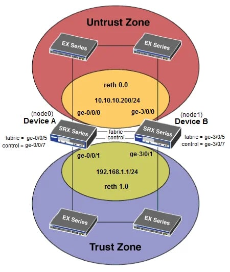

<!DOCTYPE html>
<html lang="en">

<!-- Head tag (contains Google-Analytics、Baidu-Tongji)-->
<head>
  <!-- Google Analytics -->
  

  <!-- Baidu Tongji -->
  
    <script type="text/javascript">
      // Originial
      var _hmt = _hmt || [];
      (function () {
        var hm = document.createElement("script");
        hm.src = "https://hm.baidu.com/hm.js?2bb536d3dd0b9939875b1491d84cce9c";
        var s = document.getElementsByTagName("script")[0];
        s.parentNode.insertBefore(hm, s);
      })();
    </script>
  

  <!-- Baidu Push -->
  
    <script>
      (function () {
        var bp = document.createElement('script');
        var curProtocol = window.location.protocol.split(':')[0];
        if (curProtocol === 'https') {
          bp.src = 'https://zz.bdstatic.com/linksubmit/push.js';
        } else {
          bp.src = 'http://push.zhanzhang.baidu.com/push.js';
        }
        var s = document.getElementsByTagName("script")[0];
        s.parentNode.insertBefore(bp, s);
      })();
    </script>
  

  <meta charset="utf-8"/>
  <meta http-equiv="X-UA-Compatible" content="IE=edge"/>
  
  
  
  <meta name="bytedance-verification-code" content="ogpqLENT9c9pWmb2XWie"/>
  
  <meta name="viewport" content="width=device-width, initial-scale=1"/>
  <title> Juniper SRX JSRP 配置文档 - sysin | SYStem INside | 软件与技术分享 </title>
  <meta name="description" content=" Juniper SRX JSRP 配置文档 - sysin | SYStem INside | 软件与技术分享 "/>
  <meta name="keyword" content=" Juniper SRX JSRP 配置文档 "/>
  <link rel="shortcut icon" href="/img/favicon.png"/>
  <link rel="apple-touch-icon" sizes="180x180" href="/apple-touch-icon.png"/>
  <link rel="manifest" href="/site.webmanifest"/>
  <!-- ga & ba script hoook -->
  <link rel="canonical" href="https://sysin.org/blog/juniper-srx-jsrp-config/">

  <!-- Place this tag in your head or just before your close body tag. -->
  <!-- <script async="async" defer="defer" src="https://buttons.github.io/buttons.js"></script> -->

  
    <!-- Bootstrap Core CSS -->
    <link rel="stylesheet" href="/css/bootstrap.min.css"/>

    <!-- Custom CSS -->
    <link rel="stylesheet" href="/css/beantech.min.css"/>

    <!-- Pygments Highlight CSS -->
    <link rel="stylesheet" href="/css/highlight.css"/>
    <link rel="stylesheet" href="/css/widget.css"/>
    <link rel="stylesheet" href="/css/rocket.css"/>
    <link rel="stylesheet" href="/css/signature.css"/>
    <link rel="stylesheet" href="/css/catalog.css"/>
    <link rel="stylesheet" href="/css/livemylife.css"/>

    
      <!-- wave start -->
      <link rel="stylesheet" href="/css/wave.css"/>
      <!-- wave end -->
    

    
      <!-- top start (article top hot config) -->
      <link rel="stylesheet" href="/css/top.css"/>
      <!-- top end -->
    

    
      <!-- reward start -->
      <link rel="stylesheet" href="/css/donate.css"/>
      <!-- reward end -->
    

    
      <!-- ThemeColor start -->
      <link rel="stylesheet" href="/css/scroll.css"/>
      <!-- ThemeColor end -->
    

    

    
      <!-- Search start -->
      <link rel="stylesheet" href="/css/search.css"/>
      <!-- Search end -->
    

    
      <!-- ThemeColor start -->
      <link rel="stylesheet" href="/css/themecolor.css"/>
      <!-- ThemeColor end -->
    

    
      <!-- waline start -->
      <script type="text/javascript" src="/js/waline.js"></script>
      <!-- <script type="text/javascript" src="https://unpkg.com/@waline/client@v2/dist/waline.js"></script> -->
      <link rel="stylesheet" href="/css/waline.css"/>
      <!-- <link rel="stylesheet" href="https://unpkg.com/@waline/client@v2/dist/waline.css"/> -->
      <!-- waline end -->
    

    

    

    
  

  <!-- Custom Fonts -->
  <!-- <link href="https://maxcdn.bootstrapcdn.com/font-awesome/4.3.0/css/font-awesome.min.css" rel="stylesheet" type="text/css"> -->
  <!-- Hux change font-awesome CDN to qiniu -->
  <!-- <link rel="stylesheet" href="https://cdn.staticfile.org/font-awesome/4.5.0/css/font-awesome.min.css" type="text/css"> -->
  <!-- GC change CDN to local: css/font-awesome.min.css & fonts/fontawesome-webfont.* 5 file-->
  <link rel="stylesheet" href="/css/font-awesome.min.css" type="text/css">
  <!-- ThemeColor Icon -->
  <!-- <link rel="stylesheet" href="https://fonts.googleapis.com/icon?family=Material+Icons" type="text/css"/> -->
  <link rel="stylesheet" href="/css/google-icon.css" type="text/css"/>

  <!-- Hux Delete, sad but pending in China <link href='http://fonts.googleapis.com/css?family=Lora:400,700,400italic,700italic' rel='stylesheet' type='text/css'> <link
  href='http://fonts.googleapis.com/css?family=Open+Sans:300italic,400italic,600italic,700italic,800italic,400,300,600,700,800' rel='stylesheet' type='text/ css'> -->

  <!-- HTML5 Shim and Respond.js IE8 support of HTML5 elements and media queries -->
  <!-- WARNING: Respond.js doesn't work if you view the page via file:// -->
  <!--[if lt IE 9]> <script src="https://oss.maxcdn.com/libs/html5shiv/3.7.0/html5shiv.js"></script> <script src="https://oss.maxcdn.com/libs/respond.js/1.4.2/respond.min.js"></script> <![endif]-->


<meta name="generator" content="Hexo 6.2.0"><link rel="alternate" href="/atom.xml" title="sysin" type="application/atom+xml">
<link rel="alternate" href="/feed.xml" title="sysin" type="application/rss+xml">
</head>


<!-- hack iOS CSS :active style -->

	<body ontouchstart="" class="body--light body--light">


		<!-- ThemeColor -->
		
		<!-- ThemeColor -->
<style type="text/css">
  .body--light {
    --light-mode: none;
    --dark-mode: block;
  }
  .body--dark {
    --light-mode: block;
    --dark-mode: none;
  }
  i.mdui-icon.material-icons.light-mode {
    display: var(--light-mode);
  }
  i.mdui-icon.material-icons.dark-mode {
    display: var(--dark-mode);
  }
</style>
<div class="toggle" onclick="document.body.classList.toggle('body--dark')">
  <i class="mdui-icon material-icons light-mode"></i>
  <i class="mdui-icon material-icons dark-mode"></i>
</div>
<script>
  //getCookieValue
  function getCookieValue(a) {
    var b = document.cookie.match('(^|[^;]+)\\s*' + a + '\\s*=\\s*([^;]+)');
    return b
      ? b.pop()
      : '';
  }
  let themeMode = 'light';
  if (getCookieValue('sb-color-mode') && (getCookieValue('sb-color-mode') !== themeMode)) {
    let dbody = document.body.classList;
    themeMode === 'dark' ? dbody.remove('body--dark') : dbody.add('body--dark');
  }

  //setCookieValue
  var toggleBtn = document.querySelector(".toggle");
  toggleBtn.addEventListener("click", function () {
    var e = document.body.classList.contains("body--dark");
    var cookieString = e
      ? "dark"
      : "light";
    var exp = new Date();
    exp.setTime(exp.getTime() + 3 * 24 * 60 * 60 * 1000); //3天过期
    document.cookie = "sb-color-mode=" + cookieString + ";expires=" + exp.toGMTString() + ";path=/";
  });
</script>

		

		<!-- Gitter -->
		

		<!-- Navigation (contains search)-->
		<!-- Navigation -->
<nav class="navbar navbar-default navbar-custom navbar-fixed-top">
  <div class="container-fluid">
    <!-- Brand and toggle get grouped for better mobile display -->
    <div class="navbar-header page-scroll">
      <button type="button" class="navbar-toggle">
        <span class="sr-only">Toggle navigation</span>
        <span class="icon-bar"></span>
        <span class="icon-bar"></span>
        <span class="icon-bar"></span>
      </button>
      <a class="navbar-brand" href="/" ></a>
      <!-- <a class="navbar-brand" href="/">sysin</a> -->
    </div>

    <!-- Collect the nav links, forms, and other content for toggling -->
    <!-- Known Issue, found by Hux: <nav>'s height woule be hold on by its content. so, when navbar scale out, the <nav> will cover tags. also mask any touch event of tags, unfortunately. -->
    <div id="huxblog_navbar">
      <div class="navbar-collapse">
        <ul class="nav navbar-nav navbar-right">
          <li>
            <a href="/">首页</a>
          </li>

          
          
          
          
          <li>
            <a href="/about/">
              
              关于
              
              
            </a>
          </li>
          
          
          
          <li>
            <a href="/archive/">
              
              归档
              
              
            </a>
          </li>
          
          
          
          <li>
            <a href="/categories/">
              
              分类
              
              
            </a>
          </li>
          
          
          
          <li>
            <a href="/donate/">
              
              捐助
              
              
            </a>
          </li>
          
          
          
          <li>
            <a href="/tags/">
              
              标签
              
              
            </a>
          </li>
          
          

          
          <li>
            <a class="popup-trigger">
              <span class="search-icon"></span>搜索</a>
          </li>
          

          <!-- LangSelect -->
          
        </ul>
      </div>
    </div>
    <!-- /.navbar-collapse -->
  </div>
  <!-- /.container -->
</nav>
<!-- progress -->
<div id="progress">
  <div class="line" style="width: 0%;"></div>
</div>

<script>
  // Drop Bootstarp low-performance Navbar Use customize navbar with high-quality material design animation in high-perf jank-free CSS3 implementation
  var $body = document.body;
  var $toggle = document.querySelector('.navbar-toggle');
  var $navbar = document.querySelector('#huxblog_navbar');
  var $collapse = document.querySelector('.navbar-collapse');

  $toggle.addEventListener('click', handleMagic)

  function handleMagic(e) {
    if ($navbar.className.indexOf('in') > 0) {
      // CLOSE
      $navbar.className = " ";
      // wait until animation end.
      setTimeout(function() {
        // prevent frequently toggle
        if ($navbar.className.indexOf('in') < 0) {
          $collapse.style.height = "0px"
        }
      }, 400)
    } else {
      // OPEN
      $collapse.style.height = "auto"
      $navbar.className += " in";
    }
  }
</script>


		<!-- Post Header (contains intro-header、signature、wordcount、busuanzi、waveoverlay) -->
		<!-- Modified by Yu-Hsuan Yen -->
<!-- Post Header -->

  <style type="text/css">
    .body--light {
      /* intro-header */
      --intro-header-background-image-url-home: url('/img/header_img/home.jpg');
      --intro-header-background-image-url-post: url('/img/article_header/article_header.jpg');
      --intro-header-background-image-url-page: url('//img/article_header/article_header.jpg');
    }
    .body--dark {
      --intro-header-background-image-url-home: linear-gradient(rgba(0, 0, 0, 0.1), rgba(0, 0, 0, 0.2)), url('/img/header_img/home.jpg');
      --intro-header-background-image-url-post: linear-gradient(rgba(0, 0, 0, 0.1), rgba(0, 0, 0, 0.2)), url('/img/article_header/article_header.jpg');
      --intro-header-background-image-url-page: linear-gradient(rgba(0, 0, 0, 0.1), rgba(0, 0, 0, 0.2)), url('//img/article_header/article_header.jpg');
    }

    header.intro-header {
       /*post*/
        background-image: var(--intro-header-background-image-url-post);
        /* background-image: url('/img/article_header/article_header.jpg'); */
      
    }

    
  </style>


<header class="intro-header">
  <!-- Signature -->
  <div id="signature">
    <div class="container">
      <div class="row">
        <div class="col-lg-11 col-lg-offset-0 col-md-10 col-md-offset-1">
          
          <div class="post-heading">
            <div class="tags">
              
              <a class="tag" href="/tags/#Firewall" title="Firewall">Firewall</a>
              
              <a class="tag" href="/tags/#JUNOS" title="JUNOS">JUNOS</a>
              
            </div>
            <h1>Juniper SRX JSRP 配置文档</h1>
            <h2 class="subheading"></h2>
            <span class="meta">
              Posted by sysin on
              2013-08-01
            </span>


            
            <!-- WordCount start -->
            <div class="blank_box"></div>
            <span class="meta">
              Estimated Reading Time <span class="post-count">26</span> Minutes
            </span>
            <div class="blank_box"></div>
            <span class="meta">
              Words <span class="post-count">5.2k</span> In Total
            </span>
            <div class="blank_box"></div>
            <!-- WordCount end -->
            
            


          </div>
          
        </div>
      </div>
    </div>
  </div>

  
  <!-- waveoverlay start -->
  <div class="preview-overlay">
    <svg class="preview-waves" xmlns="http://www.w3.org/2000/svg" xmlns:xlink="http://www.w3.org/1999/xlink" viewBox="0 24 150 28" preserveAspectRatio="none" shape-rendering="auto">
      <defs>
        <path id="gentle-wave" d="M-160 44c30 0 58-18 88-18s 58 18 88 18 58-18 88-18 58 18 88 18 v44h-352z"></path>
      </defs>
      <g class="preview-parallax">
        <use xlink:href="#gentle-wave" x="48" y="0" fill=var(--gentle-wave1)></use>
        <use xlink:href="#gentle-wave" x="48" y="3" fill=var(--gentle-wave2)></use>
        <use xlink:href="#gentle-wave" x="48" y="5" fill=var(--gentle-wave3)></use>
        <use xlink:href="#gentle-wave" x="48" y="7" fill=var(--gentle-wave)></use>
      </g>
    </svg>
  </div>
  <!-- waveoverlay end -->
  

</header>


		<!-- Main Content (Post contains
	Pager、
	tip、
	socialshare、
	gitalk、gitment、disqus-comment、
	Catalog、
	Sidebar、
	Featured-Tags、
	Friends Blog、
	anchorjs、
	) -->
		<!-- Modify by Yu-Hsuan Yen -->
<!-- Post Content -->
<article>
  <div class="container">
    <div class="row">
      <!-- Post Container -->
      <div class="col-lg-10 col-lg-offset-0 col-md-10 col-md-offset-1 post-container">

        <!-- pageview_count start -->
        
        <div style="color:gray" align="left">
        更新日期：Thu Aug 01 2013 10:10:00 GMT+0800，阅读量: <span class="waline-pageview-count" />
        <script type="module">
          import { pageviewCount } from '/js/pageview.mjs';
          pageviewCount({
            serverURL: 'https://discuss.sysin.org',
            path: window.location.pathname,
            // 可选的，用于自定选择器，默认为 `'.waline-pageview-count'`
            // selector: 'waline-pageview-count',
            // 可选的，是否在获取时增加访问量，默认为 `true`
            // update: true,
          });
        </script>
        </div>
        
        <!-- pageview_count end -->

        <!-- toppromotion start -->
        
        <!-- toppromotion end -->

        <p>请访问原文链接：<a href="/blog/juniper-srx-jsrp-config/" title="Juniper SRX JSRP 配置文档">Juniper SRX JSRP 配置文档</a> 查看最新版。原创作品，转载请保留出处。</p>
<p>作者主页：<a href="https://sysin.org">sysin.org</a></p>
<hr>
<p>防火墙 HA 配置系列文章：</p>
<ul>
<li>
<a href="/blog/cisco-firepower-ha-config/" title="Cisco Firepower FTD HA 配置文档">Cisco Firepower FTD HA 配置文档</a>
</li>
<li>
<a href="/blog/fortios-fgcp-ha-config/" title="FortiGate FGCP HA 配置文档">FortiGate FGCP HA 配置文档</a>
</li>
<li>
<a href="/blog/pan-os-ha-config/" title="Palo Alto PAN-OS Active&#x2F;Passive HA 配置文档">Palo Alto PAN-OS Active&#x2F;Passive HA 配置文档</a>
</li>
<li>
<a href="/blog/juniper-srx-jsrp-config/" title="Juniper SRX JSRP 配置文档">Juniper SRX JSRP 配置文档</a>
</li>
</ul>
<p></p>
<p>SRX 机箱群集（Chassis Cluster）又称为 Junos 服务冗余协议（JSRP），它通过将一对相同类型的支持瞻博网络安全路由器或 SRX 系列服务网关组合到一个群集中来提供网络节点冗余。设备必须使用增强的服务运行 Junos OS。</p>
<p>这两个节点通过一个节点作为主设备，另一个是备份设备，在发生系统或硬件故障时确保进程和服务的状态故障转移。如果主节点发生故障，辅助节点将接管信息流处理。群集中的节点通过以太网链路互连，并在整个群集中同步配置、内核和会话状态，从而促进接口和服务的高可用性。</p>
<p>机箱群集功能包括：</p>
<ul>
<li>弹性系统架构，具有整个群集的单一活动控制平面和多个数据包转发引擎，提供了群集的单一服务网关视图。</li>
<li>群集中节点之间的配置和动态运行时状态同步。</li>
<li>如果故障参数交叉于配置的阈值，则监控物理接口和故障转移。</li>
</ul>
<h2 id="一、准备篇">一、准备篇</h2>
<h3 id="1-设备登录">1. 设备登录</h3>
<p>console 口登录，初始默认用户名 root，密码为空</p>
<figure class="highlight c"><table><tr><td class="gutter"><pre><span class="line">1</span><br><span class="line">2</span><br><span class="line">3</span><br><span class="line">4</span><br><span class="line">5</span><br><span class="line">6</span><br></pre></td><td class="code"><pre><span class="line">root% cli <span class="comment">/*** 进入操作模式 ***/</span></span><br><span class="line">root&gt;</span><br><span class="line">root&gt; configure</span><br><span class="line">Entering configuration mode <span class="comment">/*** 进入配置模式 ***/</span></span><br><span class="line">[edit]</span><br><span class="line">Root#</span><br></pre></td></tr></table></figure>
<h3 id="2-恢复出厂设置">2. 恢复出厂设置</h3>
<figure class="highlight c"><table><tr><td class="gutter"><pre><span class="line">1</span><br></pre></td><td class="code"><pre><span class="line">root<span class="meta"># load factory-default</span></span><br></pre></td></tr></table></figure>
<p>同时设置密码：</p>
<figure class="highlight c"><table><tr><td class="gutter"><pre><span class="line">1</span><br></pre></td><td class="code"><pre><span class="line">root<span class="meta"># set system root-authentication plain-text-password</span></span><br></pre></td></tr></table></figure>
<blockquote>
<p>提示输入并确认密码，然后确认并重启</p>
</blockquote>
<p>设置远程登录管理用户：</p>
<figure class="highlight c"><table><tr><td class="gutter"><pre><span class="line">1</span><br><span class="line">2</span><br><span class="line">3</span><br><span class="line">4</span><br><span class="line">5</span><br></pre></td><td class="code"><pre><span class="line">root<span class="meta"># set system login user admin class super-user authentication plain-text-password</span></span><br><span class="line">root<span class="meta"># new password :</span></span><br><span class="line">root<span class="meta"># retype new password:</span></span><br><span class="line"><span class="comment">// 添加另外一个用户：</span></span><br><span class="line"><span class="built_in">set</span> system login user sysin <span class="class"><span class="keyword">class</span> <span class="title">super</span>-<span class="title">user</span> <span class="title">authentication</span> <span class="title">plain</span>-<span class="title">text</span>-<span class="title">password</span></span></span><br></pre></td></tr></table></figure>
<blockquote>
<p>补充：通过 RESET CONFIG 按键恢复出厂设置</p>
<p>To reset the device to its factory default configuration, press and hold the Reset Config button on the front panel of the SRX Series device for at least 15 seconds, until the Status LED glows amber.</p>
<p>注意：所有配置和备份都降丢失，按下 RESET CONFIG 按钮，保持 15 秒以上，直到 Status LED 灯变成琥珀色</p>
</blockquote>
<h3 id="3-网线连接-2">3. 网线连接</h3>
<p>（1）HA 带外管理端口 MGMT，即 fxp0，线缆接入交换机</p>
<ul>
<li>For SRX100 devices, connect the fe-0/0/6 port to the fe-1/0/6 port</li>
<li>For SRX210 devices, connect the fe-0/0/6 port to the fe-2/0/6 port</li>
<li>For SRX240 devices, connect the ge-0/0/0 port to the ge-5/0/0 port</li>
<li>For SRX550 devices, connect the ge-0/0/0 port to the ge-9/0/0 port</li>
<li>For SRX650 devices, connect the ge-0/0/0 port to the ge-9/0/0 port</li>
</ul>
<blockquote>
<p>2019 年更新</p>
</blockquote>
<ul>
<li>SRX300, ge-0/0/0 &lt;—&gt; ge-1/0/0</li>
<li>SRX320, ge-0/0/0 &lt;—&gt; ge-3/0/0</li>
<li>SRX340/345, 专有管理口</li>
<li>SRX550, ge-0/0/0 &lt;—&gt; ge-9/0/0</li>
<li>SRX1500, 专有管理口</li>
</ul>
<blockquote>
<p>SRX high-end 系列有专有管理端口</p>
</blockquote>
<p>（2）HA 控制信号端口 Control Port，即 fxp1，线缆直连</p>
<p>你必须使用下面设备指定端口来作为 HA 控制信号端口进行互连，即 fxp1</p>
<ul>
<li>For SRX100 devices, connect the fe-0/0/7 port to the fe-1/0/7 port</li>
<li>For SRX210 devices, connect the fe-0/0/7 port to the fe-2/0/7 port</li>
<li>For SRX240 devices, connect the ge-0/0/1 port to the ge-5/0/1 port</li>
<li>For SRX550 devices, connect the ge-0/0/1 port to the ge-9/0/1 port</li>
<li>For SRX650 devices, connect the ge-0/0/1 port to the ge-9/0/1 port</li>
</ul>
<blockquote>
<p>2019 年更新</p>
</blockquote>
<ul>
<li>SRX300, ge-0/0/1 &lt;—&gt; ge-1/0/1</li>
<li>SRX320, ge-0/0/1 &lt;—&gt; ge-3/0/1</li>
<li>SRX340/345, ge-0/0/1 &lt;—&gt; ge-5/0/1</li>
<li>SRX550, ge-0/0/1 &lt;—&gt; ge-9/0/1</li>
<li>SRX1500, 专有控制口</li>
</ul>
<p>SRX High-End 系列有专有控制端口</p>
<blockquote>
<p>补充说明：</p>
<p>SRX550 标准配置 6 个千兆以太网口，只能部署单线的 HA 结构，双线必须增加接口板卡</p>
<p>SRX650 标准配置 4 个千兆以太网口，如果需要部署 HA 结构，则必须增加数据接口板卡（因为 HA 控制平面、数据平面和带外管理接口被占用了至少 3 个接口）</p>
</blockquote>
<p>（3）HA 数据接口即 Fabric Port，可以指定任意物理接口（SRX High-End 相同），线缆直连</p>
<p>node0 中为 fab0，node1 中为 fab1</p>
<blockquote>
<p>备注：SRX4000 系列（4100、4200、4600）有专有 Fab 端口</p>
</blockquote>
<p><strong>2019 年更新新产品</strong>：<a target="_blank" rel="noopener" href="https://www.juniper.net/documentation/en_US/junos/topics/reference/general/chassis-cluster-srx-series-node-interface-understanding.html">参看官网文档</a></p>
<p><strong>网线连接实例</strong>：</p>
<ul>
<li>
<p>SRX240 连接网线（SRX550 和 SRX650 相同）</p>
<ul>
<li>0/0 带外管理 MGMT</li>
<li>0/1 直连，Control</li>
<li>0/2 直连，Fabric（可指定其他任意端口）</li>
</ul>
</li>
<li>
<p>SRX340/345 连接网线</p>
<ul>
<li>MGMT 带外管理 专有口</li>
<li>0/1 直连，Control</li>
<li>0/2 直连，Fabric（可指定其他人任意端口）</li>
</ul>
</li>
<li>
<p>SRX1500 连接网线</p>
<ul>
<li>MGMT 带外管理，专有口 MGMT</li>
<li>HA CONTROL 直连，专有口 Control</li>
<li>0/0 直连，Fabric（可指定其他人任意端口）</li>
</ul>
</li>
</ul>
<h3 id="4-在低端设备上禁用交换">4. 在低端设备上禁用交换</h3>
<blockquote>
<p>来自官方文档（原文链接失效）：Disabling Switching on SRX100, SRX210, SRX220, and SRX240 Devices Before Enabling Chassis Clustering</p>
</blockquote>
<p><strong>实际要删除更多的配置。</strong></p>
<figure class="highlight c"><table><tr><td class="gutter"><pre><span class="line">1</span><br><span class="line">2</span><br><span class="line">3</span><br><span class="line">4</span><br><span class="line">5</span><br><span class="line">6</span><br><span class="line">7</span><br><span class="line">8</span><br><span class="line">9</span><br><span class="line">10</span><br><span class="line">11</span><br><span class="line">12</span><br><span class="line">13</span><br><span class="line">14</span><br><span class="line">15</span><br><span class="line">16</span><br><span class="line">17</span><br><span class="line">18</span><br><span class="line">19</span><br><span class="line">20</span><br><span class="line">21</span><br><span class="line">22</span><br><span class="line">23</span><br><span class="line">24</span><br><span class="line">25</span><br><span class="line">26</span><br><span class="line">27</span><br><span class="line">28</span><br></pre></td><td class="code"><pre><span class="line">delete system autoinstallation</span><br><span class="line">delete system services dhcp</span><br><span class="line">delete system services web-management http interface vlan<span class="number">.0</span></span><br><span class="line">delete system services web-management https interface vlan<span class="number">.0</span></span><br><span class="line">delete interfaces interface-range interfaces-trust</span><br><span class="line">delete interfaces vlan</span><br><span class="line">delete security zones security-zone trust</span><br><span class="line">delete security nat</span><br><span class="line">delete security zones security-zone untrust</span><br><span class="line">delete security policies</span><br><span class="line">delete vlans</span><br><span class="line"></span><br><span class="line">delete interfaces ge<span class="number">-0</span>/<span class="number">0</span>/<span class="number">0</span></span><br><span class="line">delete interfaces ge<span class="number">-0</span>/<span class="number">0</span>/<span class="number">1</span></span><br><span class="line">delete interfaces ge<span class="number">-0</span>/<span class="number">0</span>/<span class="number">2</span></span><br><span class="line">delete interfaces ge<span class="number">-0</span>/<span class="number">0</span>/<span class="number">3</span></span><br><span class="line">delete interfaces ge<span class="number">-0</span>/<span class="number">0</span>/<span class="number">4</span></span><br><span class="line">delete interfaces ge<span class="number">-0</span>/<span class="number">0</span>/<span class="number">5</span></span><br><span class="line">delete interfaces ge<span class="number">-0</span>/<span class="number">0</span>/<span class="number">6</span></span><br><span class="line">delete interfaces ge<span class="number">-0</span>/<span class="number">0</span>/<span class="number">7</span></span><br><span class="line">delete interfaces ge<span class="number">-0</span>/<span class="number">0</span>/<span class="number">8</span></span><br><span class="line">delete interfaces ge<span class="number">-0</span>/<span class="number">0</span>/<span class="number">9</span></span><br><span class="line">delete interfaces ge<span class="number">-0</span>/<span class="number">0</span>/<span class="number">10</span></span><br><span class="line">delete interfaces ge<span class="number">-0</span>/<span class="number">0</span>/<span class="number">11</span></span><br><span class="line">delete interfaces ge<span class="number">-0</span>/<span class="number">0</span>/<span class="number">12</span></span><br><span class="line">delete interfaces ge<span class="number">-0</span>/<span class="number">0</span>/<span class="number">13</span></span><br><span class="line">delete interfaces ge<span class="number">-0</span>/<span class="number">0</span>/<span class="number">14</span></span><br><span class="line">delete interfaces ge<span class="number">-0</span>/<span class="number">0</span>/<span class="number">15</span></span><br></pre></td></tr></table></figure>
<p>下图是一个最简单的拓扑参考：</p>
<p></p>
<h2 id="二、配置篇">二、配置篇</h2>
<p><strong>整个 JSRP 配置过程包括如下 7 个步骤。</strong></p>
<ul>
<li>配置 Cluster id 和 Node id （对应 ScreenOS NSRP 的 cluster id 并需手工指定设备使用节点 id）</li>
<li>指定 Control Port （指定控制层面使用接口，用于配置同步及心跳）</li>
<li>指定 Fabric Link Port （指定数据层面使用接口，主要 session 等 RTO 同步）</li>
<li>配置 Redundancy Group （类似 NSRP 的 VSD group，优先级与抢占等配置）</li>
<li>每个机箱的个性化配置 （单机无需同步的个性化配置，如主机名、带外管理口 IP 地址等）</li>
<li>配置 Redundant Ethernet Interface （类似 NSRP 的 Redundant 冗余接口）</li>
<li>配置 Interface Monitoring （类似 NSRP interface monitor，是 RG 数据层面切换依据）</li>
</ul>
<blockquote>
<p>以下 SRX JSRP 配置样例，基于 SRX240 和 SRX3400：</p>
<p>分别修改两台 SRX 主机名如下：</p>
<p>root@<em>SRX</em>#set system host-name SRX-A</p>
<p>root@<em>SRX</em>#set system host-name SRX-B</p>
</blockquote>
<h3 id="1-配置-Cluster-id-和-Node-id">1. 配置 Cluster id 和 Node id</h3>
<figure class="highlight c"><table><tr><td class="gutter"><pre><span class="line">1</span><br><span class="line">2</span><br></pre></td><td class="code"><pre><span class="line">SRX-A&gt;<span class="built_in">set</span> chassis cluster cluster-id <span class="number">1</span> node <span class="number">0</span> reboot</span><br><span class="line"><span class="comment">// 注意该命令需在 operational 模式下输入</span></span><br></pre></td></tr></table></figure>
<blockquote>
<p>Cluster ID 取值范围为 1 - 15，当 Cluster ID = 0 时将 unsets the cluster），node-id 取值 0 - 1</p>
</blockquote>
<figure class="highlight c"><table><tr><td class="gutter"><pre><span class="line">1</span><br></pre></td><td class="code"><pre><span class="line">SRX-B&gt;<span class="built_in">set</span> chassis cluster cluster-id <span class="number">1</span> node <span class="number">1</span> reboot</span><br></pre></td></tr></table></figure>
<blockquote>
<p>注意：虚 IP 的 MAC 地址，是由 cluter-id 决定的，在同一网段的两组设备可能冲突，注意配置不同的 cluter-id<br>
经过测试，配置后可以更改 cluter-id，分别在两个 node 上执行上述命令即可<br>
Redundant Ethernet interface 的 MAC 地址是虚拟的，其值根据以下公式可以计算得出：<br>
0010DB11111111CCCCRRVV1111111<br>
CCCC: Cluster ID<br>
RR: Reserved. 00.<br>
VV: Version, 00 for the first release<br>
IIIIIIII: Interface id, derived from the reth index.</p>
</blockquote>
<h3 id="2-指定-Control-Port">2. 指定 Control Port</h3>
<ul>
<li>SRX Branch 系列，则无需指定，默认规定采用某一个接口作为控制接口，参考上一节</li>
<li>SRX hign-end 系列有专用 Control 端口</li>
</ul>
<h3 id="3-指定-Fabric-Link-Port">3. 指定 Fabric Link Port</h3>
<figure class="highlight c"><table><tr><td class="gutter"><pre><span class="line">1</span><br><span class="line">2</span><br></pre></td><td class="code"><pre><span class="line"><span class="built_in">set</span> interfaces fab0 fabric-options member-interfaces ge<span class="number">-0</span>/<span class="number">0</span>/<span class="number">2</span></span><br><span class="line"><span class="built_in">set</span> interfaces fab1 fabric-options member-interfaces ge<span class="number">-5</span>/<span class="number">0</span>/<span class="number">2</span></span><br></pre></td></tr></table></figure>
<blockquote>
<p>注：Fabric Link 中的 Fab0 固定用于 node 0，Fab1 固定用于 node 1</p>
</blockquote>
<h3 id="4-配置-Redundancy-Group">4. 配置 Redundancy Group</h3>
<p>RG0 固定用于主控板 RE 切换，RG1 以后用于 redundant interface 切换，RE 切换独立于接口切换</p>
<figure class="highlight c"><table><tr><td class="gutter"><pre><span class="line">1</span><br><span class="line">2</span><br><span class="line">3</span><br><span class="line">4</span><br><span class="line">5</span><br></pre></td><td class="code"><pre><span class="line"><span class="built_in">set</span> chassis cluster reth-count <span class="number">10</span>  <span class="comment">//（指定整个 Cluster 中 redundant ethernet interface 最多数量）</span></span><br><span class="line"><span class="built_in">set</span> chassis cluster redundancy-group <span class="number">0</span> node <span class="number">0</span> priority <span class="number">200</span>  <span class="comment">//（取值范围 1-254，高值优先，与 NSRP 相反）</span></span><br><span class="line"><span class="built_in">set</span> chassis cluster redundancy-group <span class="number">0</span> node <span class="number">1</span> priority <span class="number">100</span></span><br><span class="line"><span class="built_in">set</span> chassis cluster redundancy-group <span class="number">1</span> node <span class="number">0</span> priority <span class="number">200</span>  <span class="comment">//（取值范围 1-254，高值优先，与 NSRP 相反）</span></span><br><span class="line"><span class="built_in">set</span> chassis cluster redundancy-group <span class="number">1</span> node <span class="number">1</span> priority <span class="number">100</span></span><br></pre></td></tr></table></figure>
<h3 id="5-每个机箱的个性化配置，便于对两台设备的区分与管理">5. 每个机箱的个性化配置，便于对两台设备的区分与管理</h3>
<figure class="highlight c"><table><tr><td class="gutter"><pre><span class="line">1</span><br><span class="line">2</span><br><span class="line">3</span><br><span class="line">4</span><br><span class="line">5</span><br><span class="line">6</span><br></pre></td><td class="code"><pre><span class="line"><span class="built_in">set</span> groups node0 system host-name SRX-A</span><br><span class="line"><span class="built_in">set</span> groups node0 interfaces fxp0 unit <span class="number">0</span> family inet address <span class="number">10.3</span><span class="number">.2</span><span class="number">.251</span>/<span class="number">24</span>  <span class="comment">//（带外网管口名称为 fxp0，区别 ScreenOS 的 MGT 口）</span></span><br><span class="line"><span class="built_in">set</span> groups node1 system host-name SRX-B</span><br><span class="line"><span class="built_in">set</span> groups node1 interfaces fxp0 unit <span class="number">0</span> family inet address <span class="number">10.3</span><span class="number">.2</span><span class="number">.252</span>/<span class="number">24</span></span><br><span class="line"></span><br><span class="line"><span class="built_in">set</span> apply-groups $&#123;node&#125; <span class="comment">//（应用上述 groups 配置）</span></span><br></pre></td></tr></table></figure>
<p>配置带外管理口 backup-router</p>
<p><strong>The backup-router destination of 0.0.0.0/0 is not recommended, and should be avoided.</strong></p>
<figure class="highlight c"><table><tr><td class="gutter"><pre><span class="line">1</span><br><span class="line">2</span><br></pre></td><td class="code"><pre><span class="line"><span class="built_in">set</span> groups node0 system backup-router <span class="number">10.3</span><span class="number">.2</span><span class="number">.1</span> destination <span class="number">10.3</span><span class="number">.0</span><span class="number">.0</span>/<span class="number">16</span></span><br><span class="line"><span class="built_in">set</span> groups node1 system backup-router <span class="number">10.3</span><span class="number">.2</span><span class="number">.1</span> destination <span class="number">10.3</span><span class="number">.0</span><span class="number">.0</span>/<span class="number">16</span></span><br></pre></td></tr></table></figure>
<p>关于带外管理口的 fxp0</p>
<p>不属于任何安全区域</p>
<p>需要 ssh 服务开启（set system services ssh）才能访问</p>
<p>需要配置 backup-router 以便非相同子网的远程管理客户端访问</p>
<h3 id="6-配置-Redundant-Ethernet-Interface">6. 配置 Redundant Ethernet Interface</h3>
<p>Redundant Ethernet Interface 类 似 ScreenOS 里 的 redundant interface，只不过 Redundant Ethernet interface 是分布在不同的机箱上 (这一特性又类似 ScreenOS 的 VSI 接口)。</p>
<p>本例是电信和联通双线网络</p>
<figure class="highlight c"><table><tr><td class="gutter"><pre><span class="line">1</span><br><span class="line">2</span><br><span class="line">3</span><br><span class="line">4</span><br><span class="line">5</span><br><span class="line">6</span><br><span class="line">7</span><br><span class="line">8</span><br><span class="line">9</span><br><span class="line">10</span><br><span class="line">11</span><br><span class="line">12</span><br><span class="line">13</span><br><span class="line">14</span><br><span class="line">15</span><br><span class="line">16</span><br><span class="line">17</span><br><span class="line">18</span><br><span class="line">19</span><br><span class="line">20</span><br><span class="line">21</span><br><span class="line">22</span><br><span class="line">23</span><br><span class="line">24</span><br><span class="line">25</span><br></pre></td><td class="code"><pre><span class="line"><span class="comment">// 内网口</span></span><br><span class="line"><span class="built_in">set</span> interface ge<span class="number">-0</span>/<span class="number">0</span>/<span class="number">3</span> gigether-options redundant-parent reth0  <span class="comment">//（node 0 的 ge-0/0/3 接口）</span></span><br><span class="line"><span class="built_in">set</span> interface ge<span class="number">-5</span>/<span class="number">0</span>/<span class="number">3</span> gigether-options redundant-parent reth0  <span class="comment">//（node 1 的 ge-0/0/3 接口）</span></span><br><span class="line"><span class="built_in">set</span> interface reth0 redundant-ether-options redundancy-group <span class="number">1</span>  <span class="comment">//（reth0 属于 RG1）</span></span><br><span class="line"><span class="built_in">set</span> interface reth0 unit <span class="number">0</span> family inet address <span class="number">10.3</span><span class="number">.1</span><span class="number">.254</span>/<span class="number">24</span></span><br><span class="line"><span class="comment">// 电信外部</span></span><br><span class="line"><span class="built_in">set</span> interface ge<span class="number">-0</span>/<span class="number">0</span>/<span class="number">4</span> gigether-options redundant-parent reth1</span><br><span class="line"><span class="built_in">set</span> interface ge<span class="number">-5</span>/<span class="number">0</span>/<span class="number">4</span> gigether-options redundant-parent reth1</span><br><span class="line"><span class="built_in">set</span> interface reth1 redundant-ether-options redundancy-group <span class="number">1</span></span><br><span class="line"><span class="built_in">set</span> interface reth1 unit <span class="number">0</span> family inet address <span class="number">122.226</span><span class="number">.95</span><span class="number">.226</span>/<span class="number">28</span></span><br><span class="line"><span class="comment">// 电信内部</span></span><br><span class="line"><span class="built_in">set</span> interface ge<span class="number">-0</span>/<span class="number">0</span>/<span class="number">5</span> gigether-options redundant-parent reth2</span><br><span class="line"><span class="built_in">set</span> interface ge<span class="number">-5</span>/<span class="number">0</span>/<span class="number">5</span> gigether-options redundant-parent reth2</span><br><span class="line"><span class="built_in">set</span> interface reth2 redundant-ether-options redundancy-group <span class="number">1</span></span><br><span class="line"><span class="built_in">set</span> interface reth2 unit <span class="number">0</span> family inet address <span class="number">122.226</span><span class="number">.95</span><span class="number">.254</span>/<span class="number">28</span></span><br><span class="line"><span class="comment">// 联通外部</span></span><br><span class="line"><span class="built_in">set</span> interface ge<span class="number">-0</span>/<span class="number">0</span>/<span class="number">6</span> gigether-options redundant-parent reth3</span><br><span class="line"><span class="built_in">set</span> interface ge<span class="number">-5</span>/<span class="number">0</span>/<span class="number">6</span> gigether-options redundant-parent reth3</span><br><span class="line"><span class="built_in">set</span> interface reth3 redundant-ether-options redundancy-group <span class="number">1</span></span><br><span class="line"><span class="built_in">set</span> interface reth3 unit <span class="number">0</span> family inet address <span class="number">192.168</span><span class="number">.1</span><span class="number">.1</span>/<span class="number">24</span></span><br><span class="line"><span class="comment">// 联通内部</span></span><br><span class="line"><span class="built_in">set</span> interface ge<span class="number">-0</span>/<span class="number">0</span>/<span class="number">7</span> gigether-options redundant-parent reth4</span><br><span class="line"><span class="built_in">set</span> interface ge<span class="number">-5</span>/<span class="number">0</span>/<span class="number">7</span> gigether-options redundant-parent reth4</span><br><span class="line"><span class="built_in">set</span> interface reth4 redundant-ether-options redundancy-group <span class="number">1</span></span><br><span class="line"><span class="built_in">set</span> interface reth4 unit <span class="number">0</span> family inet address <span class="number">192.168</span><span class="number">.100</span><span class="number">.1</span>/<span class="number">24</span></span><br></pre></td></tr></table></figure>
<h3 id="7-配置-Interface-Monitoring">7. 配置 Interface Monitoring</h3>
<p>被监控的接口 Down 掉后，RG1 将自动进行主备切换（与 ScreenOS 类似）</p>
<figure class="highlight c"><table><tr><td class="gutter"><pre><span class="line">1</span><br><span class="line">2</span><br><span class="line">3</span><br><span class="line">4</span><br><span class="line">5</span><br><span class="line">6</span><br><span class="line">7</span><br><span class="line">8</span><br><span class="line">9</span><br><span class="line">10</span><br><span class="line">11</span><br></pre></td><td class="code"><pre><span class="line"><span class="built_in">set</span> chassis cluster redundancy-group <span class="number">1</span> interface-monitor ge<span class="number">-0</span>/<span class="number">0</span>/<span class="number">3</span> weight <span class="number">255</span></span><br><span class="line"><span class="built_in">set</span> chassis cluster redundancy-group <span class="number">1</span> interface-monitor ge<span class="number">-0</span>/<span class="number">0</span>/<span class="number">4</span> weight <span class="number">255</span></span><br><span class="line"><span class="built_in">set</span> chassis cluster redundancy-group <span class="number">1</span> interface-monitor ge<span class="number">-0</span>/<span class="number">0</span>/<span class="number">5</span> weight <span class="number">255</span></span><br><span class="line"><span class="built_in">set</span> chassis cluster redundancy-group <span class="number">1</span> interface-monitor ge<span class="number">-0</span>/<span class="number">0</span>/<span class="number">6</span> weight <span class="number">255</span></span><br><span class="line"><span class="built_in">set</span> chassis cluster redundancy-group <span class="number">1</span> interface-monitor ge<span class="number">-0</span>/<span class="number">0</span>/<span class="number">7</span> weight <span class="number">255</span></span><br><span class="line"></span><br><span class="line"><span class="built_in">set</span> chassis cluster redundancy-group <span class="number">1</span> interface-monitor ge<span class="number">-5</span>/<span class="number">0</span>/<span class="number">3</span> weight <span class="number">255</span></span><br><span class="line"><span class="built_in">set</span> chassis cluster redundancy-group <span class="number">1</span> interface-monitor ge<span class="number">-5</span>/<span class="number">0</span>/<span class="number">4</span> weight <span class="number">255</span></span><br><span class="line"><span class="built_in">set</span> chassis cluster redundancy-group <span class="number">1</span> interface-monitor ge<span class="number">-5</span>/<span class="number">0</span>/<span class="number">5</span> weight <span class="number">255</span></span><br><span class="line"><span class="built_in">set</span> chassis cluster redundancy-group <span class="number">1</span> interface-monitor ge<span class="number">-5</span>/<span class="number">0</span>/<span class="number">6</span> weight <span class="number">255</span></span><br><span class="line"><span class="built_in">set</span> chassis cluster redundancy-group <span class="number">1</span> interface-monitor ge<span class="number">-5</span>/<span class="number">0</span>/<span class="number">7</span> weight <span class="number">255</span></span><br></pre></td></tr></table></figure>
<blockquote>
<p>以上群集配置完成，以下开始网络和策略配置</p>
</blockquote>
<h3 id="8-配置安全区域">8. 配置安全区域</h3>
<figure class="highlight c"><table><tr><td class="gutter"><pre><span class="line">1</span><br><span class="line">2</span><br><span class="line">3</span><br><span class="line">4</span><br><span class="line">5</span><br><span class="line">6</span><br><span class="line">7</span><br><span class="line">8</span><br><span class="line">9</span><br><span class="line">10</span><br><span class="line">11</span><br><span class="line">12</span><br><span class="line">13</span><br><span class="line">14</span><br><span class="line">15</span><br><span class="line">16</span><br><span class="line">17</span><br><span class="line">18</span><br><span class="line">19</span><br><span class="line">20</span><br><span class="line">21</span><br><span class="line">22</span><br><span class="line">23</span><br></pre></td><td class="code"><pre><span class="line"><span class="built_in">set</span> security zones security-zone trust interfaces reth0<span class="number">.0</span></span><br><span class="line"><span class="built_in">set</span> security zones security-zone trust host-inbound-traffic system-services all</span><br><span class="line"><span class="built_in">set</span> security zones security-zone trust host-inbound-traffic protocols all</span><br><span class="line"></span><br><span class="line"><span class="built_in">set</span> security zones security-zone CT-sysin-Outside interfaces reth1<span class="number">.0</span></span><br><span class="line"><span class="comment">//set security zones security-zone CT-sysin-Outside host-inbound-traffic system-services all  // 配置 ssh，ping 即可</span></span><br><span class="line"><span class="built_in">set</span> security zones security-zone CT-sysin-Outside host-inbound-traffic system-services ssh</span><br><span class="line"><span class="built_in">set</span> security zones security-zone CT-sysin-Outside host-inbound-traffic system-services ping</span><br><span class="line"><span class="built_in">set</span> security zones security-zone CT-sysin-Outside host-inbound-traffic protocols all</span><br><span class="line"></span><br><span class="line"><span class="built_in">set</span> security zones security-zone CT-sysin-Inside interfaces reth2<span class="number">.0</span></span><br><span class="line"><span class="built_in">set</span> security zones security-zone CT-sysin-Inside host-inbound-traffic system-services all</span><br><span class="line"><span class="built_in">set</span> security zones security-zone CT-sysin-Inside host-inbound-traffic protocols all</span><br><span class="line"></span><br><span class="line"><span class="built_in">set</span> security zones security-zone CU-sysin-Outside interfaces reth3<span class="number">.0</span></span><br><span class="line"><span class="comment">//set security zones security-zone CU-sysin-Outside host-inbound-traffic system-services all  // 配置 ssh，ping 即可</span></span><br><span class="line"><span class="built_in">set</span> security zones security-zone CU-sysin-Outside host-inbound-traffic system-services ssh</span><br><span class="line"><span class="built_in">set</span> security zones security-zone CU-sysin-Outside host-inbound-traffic system-services ping</span><br><span class="line"><span class="built_in">set</span> security zones security-zone CU-sysin-Outside host-inbound-traffic protocols all</span><br><span class="line"></span><br><span class="line"><span class="built_in">set</span> security zones security-zone CU-sysin-Inside interfaces reth4<span class="number">.0</span></span><br><span class="line"><span class="built_in">set</span> security zones security-zone CU-sysin-Inside host-inbound-traffic system-services all</span><br><span class="line"><span class="built_in">set</span> security zones security-zone CU-sysin-Inside host-inbound-traffic protocols all</span><br></pre></td></tr></table></figure>
<h3 id="9-配置路由">9. 配置路由</h3>
<figure class="highlight c"><table><tr><td class="gutter"><pre><span class="line">1</span><br><span class="line">2</span><br><span class="line">3</span><br><span class="line">4</span><br><span class="line">5</span><br><span class="line">6</span><br><span class="line">7</span><br><span class="line">8</span><br><span class="line">9</span><br><span class="line">10</span><br><span class="line">11</span><br><span class="line">12</span><br><span class="line">13</span><br><span class="line">14</span><br><span class="line">15</span><br><span class="line">16</span><br><span class="line">17</span><br><span class="line">18</span><br><span class="line">19</span><br><span class="line">20</span><br><span class="line">21</span><br></pre></td><td class="code"><pre><span class="line"><span class="built_in">set</span> routing-options interface-routes rib-group inet inside</span><br><span class="line"><span class="built_in">set</span> routing-options <span class="type">static</span> route <span class="number">0.0</span><span class="number">.0</span><span class="number">.0</span>/<span class="number">0</span> next-hop <span class="number">122.226</span><span class="number">.95</span><span class="number">.225</span>  <span class="comment">// 默认网关指向电信或者联通默认网关，看来只能默认从一条线路出？</span></span><br><span class="line"><span class="built_in">set</span> routing-options <span class="type">static</span> route <span class="number">10.3</span><span class="number">.0</span><span class="number">.0</span>/<span class="number">16</span> next-hop <span class="number">10.3</span><span class="number">.1</span><span class="number">.10</span>  <span class="comment">// 内部网络指向核心交换</span></span><br><span class="line"><span class="built_in">set</span> routing-options rib-groups inside import-rib inet<span class="number">.0</span></span><br><span class="line"></span><br><span class="line"><span class="built_in">set</span> routing-options rib-groups inside import-rib CT.inet<span class="number">.0</span></span><br><span class="line"><span class="built_in">set</span> routing-options rib-groups inside import-rib CU.inet<span class="number">.0</span></span><br><span class="line"></span><br><span class="line"><span class="built_in">set</span> routing-instances CT instance-type virtual-router</span><br><span class="line"><span class="built_in">set</span> routing-instances CT interface reth1<span class="number">.0</span></span><br><span class="line"><span class="built_in">set</span> routing-instances CT interface reth2<span class="number">.0</span></span><br><span class="line"><span class="built_in">set</span> routing-instances CT routing-options interface-routes rib-group inet inside  <span class="comment">// 这句可以不用配置，配置后实例路由表包含其他实例的条目</span></span><br><span class="line"><span class="built_in">set</span> routing-instances CT routing-options <span class="type">static</span> route <span class="number">122.226</span><span class="number">.95</span><span class="number">.240</span>/<span class="number">28</span> next-hop <span class="number">122.226</span><span class="number">.95</span><span class="number">.253</span>  <span class="comment">// 电信内部 IP 段指向 F5，可以不用配置</span></span><br><span class="line"><span class="built_in">set</span> routing-instances CT routing-options <span class="type">static</span> route <span class="number">0.0</span><span class="number">.0</span><span class="number">.0</span>/<span class="number">0</span> next-hop <span class="number">122.226</span><span class="number">.95</span><span class="number">.225</span> <span class="comment">// 电信外部 IP 段默认网关</span></span><br><span class="line"></span><br><span class="line"><span class="built_in">set</span> routing-instances CU instance-type virtual-router</span><br><span class="line"><span class="built_in">set</span> routing-instances CU interface reth3<span class="number">.0</span></span><br><span class="line"><span class="built_in">set</span> routing-instances CU interface reth4<span class="number">.0</span></span><br><span class="line"><span class="built_in">set</span> routing-instances CU routing-options interface-routes rib-group inet inside  <span class="comment">// 这句可以不用配置，配置后实例路由表包含其他实例的标目</span></span><br><span class="line"><span class="built_in">set</span> routing-instances CU routing-options <span class="type">static</span> route <span class="number">192.168</span><span class="number">.100</span><span class="number">.64</span>/<span class="number">24</span> next-hop <span class="number">192.168</span><span class="number">.100</span><span class="number">.4</span>  <span class="comment">// 联通外部 IP 段指向 F5，可以不用配置</span></span><br><span class="line"><span class="built_in">set</span> routing-instances CU routing-options <span class="type">static</span> route <span class="number">0.0</span><span class="number">.0</span><span class="number">.0</span>/<span class="number">0</span> next-hop <span class="number">192.168</span><span class="number">.1</span><span class="number">.1</span>  <span class="comment">// 联通外部 IP 段默认网关</span></span><br></pre></td></tr></table></figure>
<h3 id="10-设置安全策略">10. 设置安全策略</h3>
<figure class="highlight c"><table><tr><td class="gutter"><pre><span class="line">1</span><br><span class="line">2</span><br><span class="line">3</span><br><span class="line">4</span><br><span class="line">5</span><br><span class="line">6</span><br><span class="line">7</span><br><span class="line">8</span><br><span class="line">9</span><br><span class="line">10</span><br><span class="line">11</span><br><span class="line">12</span><br><span class="line">13</span><br><span class="line">14</span><br><span class="line">15</span><br><span class="line">16</span><br><span class="line">17</span><br><span class="line">18</span><br><span class="line">19</span><br><span class="line">20</span><br><span class="line">21</span><br><span class="line">22</span><br><span class="line">23</span><br><span class="line">24</span><br><span class="line">25</span><br><span class="line">26</span><br><span class="line">27</span><br><span class="line">28</span><br><span class="line">29</span><br><span class="line">30</span><br><span class="line">31</span><br><span class="line">32</span><br><span class="line">33</span><br><span class="line">34</span><br><span class="line">35</span><br><span class="line">36</span><br><span class="line">37</span><br><span class="line">38</span><br><span class="line">39</span><br><span class="line">40</span><br><span class="line">41</span><br><span class="line">42</span><br><span class="line">43</span><br><span class="line">44</span><br><span class="line">45</span><br></pre></td><td class="code"><pre><span class="line"><span class="comment">// 电信内部到电信外部，默认允许</span></span><br><span class="line"><span class="built_in">set</span> security policies from-zone CT-sysin-Inside to-zone CT-sysin-Outside policy CT-Outbound match source-address any</span><br><span class="line"><span class="built_in">set</span> security policies from-zone CT-sysin-Inside to-zone CT-sysin-Outside policy CT-Outbound match destination-address any</span><br><span class="line"><span class="built_in">set</span> security policies from-zone CT-sysin-Inside to-zone CT-sysin-Outside policy CT-Outbound match application any</span><br><span class="line"><span class="built_in">set</span> security policies from-zone CT-sysin-Inside to-zone CT-sysin-Outside policy CT-Outbound then permit</span><br><span class="line"></span><br><span class="line"><span class="comment">// 电信外部到电信内部，允许特定协议</span></span><br><span class="line"><span class="built_in">set</span> security policies from-zone CT-sysin-Outside to-zone CT-sysin-Inside policy CT-Inbound match source-address any</span><br><span class="line"><span class="built_in">set</span> security policies from-zone CT-sysin-Outside to-zone CT-sysin-Inside policy CT-Inbound match destination-address any</span><br><span class="line"><span class="built_in">set</span> security policies from-zone CT-sysin-Outside to-zone CT-sysin-Inside policy CT-Inbound match application junos-http</span><br><span class="line"><span class="built_in">set</span> security policies from-zone CT-sysin-Outside to-zone CT-sysin-Inside policy CT-Inbound match application junos-https</span><br><span class="line"><span class="built_in">set</span> security policies from-zone CT-sysin-Outside to-zone CT-sysin-Inside policy CT-Inbound match application junos-icmp-all</span><br><span class="line"><span class="built_in">set</span> security policies from-zone CT-sysin-Outside to-zone CT-sysin-Inside policy CT-Inbound match application junos-smtp</span><br><span class="line"><span class="built_in">set</span> security policies from-zone CT-sysin-Outside to-zone CT-sysin-Inside policy CT-Inbound match application TCP<span class="number">-8080</span></span><br><span class="line"><span class="built_in">set</span> security policies from-zone CT-sysin-Outside to-zone CT-sysin-Inside policy CT-Inbound then permit</span><br><span class="line"><span class="built_in">set</span> security policies from-zone CT-sysin-Outside to-zone CT-sysin-Inside policy CT-Inbound then <span class="built_in">log</span> session-close</span><br><span class="line"></span><br><span class="line"><span class="comment">// 联通内部到联通外部，默认允许 // 注意 CU 和 CT 差别</span></span><br><span class="line"><span class="built_in">set</span> security policies from-zone CU-sysin-Inside to-zone CU-sysin-Outside policy CU-Outbound match source-address any</span><br><span class="line"><span class="built_in">set</span> security policies from-zone CU-sysin-Inside to-zone CU-sysin-Outside policy CU-Outbound match destination-address any</span><br><span class="line"><span class="built_in">set</span> security policies from-zone CU-sysin-Inside to-zone CU-sysin-Outside policy CU-Outbound match application any</span><br><span class="line"><span class="built_in">set</span> security policies from-zone CU-sysin-Inside to-zone CU-sysin-Outside policy CU-Outbound then permit</span><br><span class="line"></span><br><span class="line"><span class="comment">// 联通外部到联通内部，允许特定协议 // 注意 CU 和 CT 差别</span></span><br><span class="line"><span class="built_in">set</span> security policies from-zone CU-sysin-Outside to-zone CU-sysin-Inside policy CU-Inbound match source-address any</span><br><span class="line"><span class="built_in">set</span> security policies from-zone CU-sysin-Outside to-zone CU-sysin-Inside policy CU-Inbound match destination-address any</span><br><span class="line"><span class="built_in">set</span> security policies from-zone CU-sysin-Outside to-zone CU-sysin-Inside policy CU-Inbound match application junos-http</span><br><span class="line"><span class="built_in">set</span> security policies from-zone CU-sysin-Outside to-zone CU-sysin-Inside policy CU-Inbound match application junos-https</span><br><span class="line"><span class="built_in">set</span> security policies from-zone CU-sysin-Outside to-zone CU-sysin-Inside policy CU-Inbound match application junos-icmp-all</span><br><span class="line"><span class="built_in">set</span> security policies from-zone CU-sysin-Outside to-zone CU-sysin-Inside policy CU-Inbound match application junos-smtp</span><br><span class="line"><span class="built_in">set</span> security policies from-zone CU-sysin-Outside to-zone CU-sysin-Inside policy CU-Inbound match application TCP<span class="number">-8080</span></span><br><span class="line"><span class="built_in">set</span> security policies from-zone CU-sysin-Outside to-zone CU-sysin-Inside policy CU-Inbound then permit</span><br><span class="line"><span class="built_in">set</span> security policies from-zone CU-sysin-Outside to-zone CU-sysin-Inside policy CU-Inbound then <span class="built_in">log</span> session-close</span><br><span class="line"></span><br><span class="line"><span class="comment">// 内部到外部，默认用电信允许全部</span></span><br><span class="line"><span class="built_in">set</span> security policies from-zone trust to-zone CT-sysin-Outside policy trust-outbound match source-address any</span><br><span class="line"><span class="built_in">set</span> security policies from-zone trust to-zone CT-sysin-Outside policy trust-outbound match destination-address any</span><br><span class="line"><span class="built_in">set</span> security policies from-zone trust to-zone CT-sysin-Outside policy trust-outbound match application any</span><br><span class="line"><span class="built_in">set</span> security policies from-zone trust to-zone CT-sysin-Outside policy trust-outbound then permit</span><br><span class="line"></span><br><span class="line"><span class="comment">// 电信外部到内部，指定应用</span></span><br><span class="line"><span class="built_in">set</span> security policies from-zone CT-sysin-Outside to-zone trust policy policy<span class="number">-1</span> match source-address any</span><br><span class="line"><span class="built_in">set</span> security policies from-zone CT-sysin-Outside to-zone trust policy policy<span class="number">-1</span> match destination-address <span class="number">10.19</span><span class="number">.177</span><span class="number">.231</span>/<span class="number">32</span></span><br><span class="line"><span class="built_in">set</span> security policies from-zone CT-sysin-Outside to-zone trust policy policy<span class="number">-1</span> match application any</span><br><span class="line"><span class="built_in">set</span> security policies from-zone CT-sysin-Outside to-zone trust policy policy<span class="number">-1</span> then permit</span><br></pre></td></tr></table></figure>
<p>自定义应用和协议</p>
<figure class="highlight c"><table><tr><td class="gutter"><pre><span class="line">1</span><br><span class="line">2</span><br><span class="line">3</span><br></pre></td><td class="code"><pre><span class="line"><span class="built_in">set</span> applications application TCP<span class="number">-8080</span> protocol tcp</span><br><span class="line"><span class="built_in">set</span> applications application TCP<span class="number">-8080</span> source-port <span class="number">1</span><span class="number">-65535</span></span><br><span class="line"><span class="built_in">set</span> applications application TCP<span class="number">-8080</span> destination-port <span class="number">8080</span></span><br></pre></td></tr></table></figure>
<h3 id="11-其他常用配置">11. 其他常用配置</h3>
<ul>
<li>自定义应用和协议</li>
</ul>
<figure class="highlight c"><table><tr><td class="gutter"><pre><span class="line">1</span><br><span class="line">2</span><br><span class="line">3</span><br><span class="line">4</span><br><span class="line">5</span><br><span class="line">6</span><br><span class="line">7</span><br><span class="line">8</span><br><span class="line">9</span><br></pre></td><td class="code"><pre><span class="line"><span class="comment">// 定义一个 TCP 8080 端口的应用</span></span><br><span class="line"><span class="built_in">set</span> applications application TCP<span class="number">-8080</span> protocol tcp</span><br><span class="line"><span class="built_in">set</span> applications application TCP<span class="number">-8080</span> source-port <span class="number">1</span><span class="number">-65535</span></span><br><span class="line"><span class="built_in">set</span> applications application TCP<span class="number">-8080</span> destination-port <span class="number">8080</span></span><br><span class="line"></span><br><span class="line"><span class="comment">// 定义一个 UDP 9999 端口的应用</span></span><br><span class="line">&gt;<span class="built_in">set</span> applications application UDP<span class="number">-9999</span> protocol udp</span><br><span class="line">&gt;<span class="built_in">set</span> applications application UDP<span class="number">-9999</span> source-port <span class="number">1</span><span class="number">-65535</span></span><br><span class="line">&gt;<span class="built_in">set</span> applications application UDP<span class="number">-9999</span> destination-port <span class="number">9999</span></span><br></pre></td></tr></table></figure>
<ul>
<li>时区</li>
</ul>
<figure class="highlight c"><table><tr><td class="gutter"><pre><span class="line">1</span><br></pre></td><td class="code"><pre><span class="line"><span class="built_in">set</span> system time-zone Asia/Shanghai</span><br></pre></td></tr></table></figure>
<ul>
<li>NTP</li>
</ul>
<figure class="highlight c"><table><tr><td class="gutter"><pre><span class="line">1</span><br><span class="line">2</span><br><span class="line">3</span><br><span class="line">4</span><br><span class="line">5</span><br><span class="line">6</span><br></pre></td><td class="code"><pre><span class="line"><span class="built_in">set</span> system ntp server <span class="number">10.3</span><span class="number">.5</span><span class="number">.11</span> version <span class="number">3</span></span><br><span class="line"><span class="built_in">set</span> system ntp server <span class="number">10.3</span><span class="number">.5</span><span class="number">.12</span> version <span class="number">3</span></span><br><span class="line"><span class="built_in">set</span> system ntp server <span class="number">10.3</span><span class="number">.5</span><span class="number">.11</span> prefer</span><br><span class="line"><span class="comment">//version 3 为 Windows NTP，或者直接配置</span></span><br><span class="line"><span class="built_in">set</span> system ntp server <span class="number">10.3</span><span class="number">.5</span><span class="number">.11</span></span><br><span class="line"><span class="built_in">set</span> system ntp server <span class="number">10.3</span><span class="number">.5</span><span class="number">.12</span></span><br></pre></td></tr></table></figure>
<ul>
<li>远程管理服务</li>
</ul>
<figure class="highlight c"><table><tr><td class="gutter"><pre><span class="line">1</span><br><span class="line">2</span><br><span class="line">3</span><br><span class="line">4</span><br><span class="line">5</span><br></pre></td><td class="code"><pre><span class="line"><span class="built_in">set</span> system services ssh</span><br><span class="line"><span class="built_in">set</span> system services telnet  <span class="comment">// 可以 delete</span></span><br><span class="line"><span class="built_in">set</span> system services xnm-clear-text  <span class="comment">// 建议 delete</span></span><br><span class="line"><span class="built_in">set</span> system services web-management http  <span class="comment">// 建议 delete</span></span><br><span class="line"><span class="built_in">set</span> system services web-management https system-generated-certificate  <span class="comment">// 可以 delete</span></span><br></pre></td></tr></table></figure>
<ul>
<li>端口告警设置</li>
</ul>
<figure class="highlight c"><table><tr><td class="gutter"><pre><span class="line">1</span><br><span class="line">2</span><br><span class="line">3</span><br><span class="line">4</span><br></pre></td><td class="code"><pre><span class="line"><span class="built_in">set</span> chassis alarm ethernet link-down ignore  <span class="comment">// 设置全部端口不产生告警</span></span><br><span class="line"><span class="comment">// 注意：link-down 可以侦测端口的状态，如果设置了端口 link down 的 alarm 告警，则不用的端口最好 disable，以避免频繁告警</span></span><br><span class="line"><span class="comment">// 补充：</span></span><br><span class="line"><span class="built_in">set</span> chassis alarm ethernet link-down red  <span class="comment">// 设置全部端口产生告警</span></span><br></pre></td></tr></table></figure>
<ul>
<li>SNMP</li>
</ul>
<figure class="highlight c"><table><tr><td class="gutter"><pre><span class="line">1</span><br><span class="line">2</span><br><span class="line">3</span><br><span class="line">4</span><br></pre></td><td class="code"><pre><span class="line"><span class="built_in">set</span> snmp location Beijing</span><br><span class="line"><span class="built_in">set</span> snmp contact <span class="string">&quot;xxx@domain.com&quot;</span></span><br><span class="line"><span class="built_in">set</span> snmp community &lt;abc&gt; authorization read-only  <span class="comment">// 将 &lt;abc&gt; 修改为自定义的字符</span></span><br><span class="line"><span class="built_in">set</span> security zones security-zone trust host-inbound-traffic system-services snmp  <span class="comment">// 注意开启 zone 的 snmp 服务，这里是 trust</span></span><br></pre></td></tr></table></figure>
<ul>
<li>关闭 ALG</li>
</ul>
<blockquote>
<p>ALG 应用级网关，也叫做应用层网关（Application Layer Gateway）</p>
</blockquote>
<figure class="highlight c"><table><tr><td class="gutter"><pre><span class="line">1</span><br><span class="line">2</span><br><span class="line">3</span><br></pre></td><td class="code"><pre><span class="line"><span class="built_in">set</span> security alg [协议名称] disable</span><br><span class="line"><span class="built_in">set</span> security alg dns disable</span><br><span class="line"><span class="built_in">set</span> security alg sql disable</span><br></pre></td></tr></table></figure>
<ul>
<li>针对内网口，设置源地址 nat</li>
</ul>
<figure class="highlight c"><table><tr><td class="gutter"><pre><span class="line">1</span><br><span class="line">2</span><br><span class="line">3</span><br><span class="line">4</span><br></pre></td><td class="code"><pre><span class="line"><span class="built_in">set</span> security nat source rule-<span class="built_in">set</span> trust-to-CT from zone trust</span><br><span class="line"><span class="built_in">set</span> security nat source rule-<span class="built_in">set</span> trust-to-CT to zone CT-sysin-Outside</span><br><span class="line"><span class="built_in">set</span> security nat source rule-<span class="built_in">set</span> trust-to-CT rule <span class="number">01</span> match source-address <span class="number">10.3</span><span class="number">.0</span><span class="number">.0</span>/<span class="number">16</span>  <span class="comment">// 或者直接 0.0.0.0/0</span></span><br><span class="line"><span class="built_in">set</span> security nat source rule-<span class="built_in">set</span> trust-to-CT rule <span class="number">01</span> then source-nat interface</span><br></pre></td></tr></table></figure>
<ul>
<li>设置 DNS（系统默认这条是用 OpenDNS）</li>
</ul>
<figure class="highlight c"><table><tr><td class="gutter"><pre><span class="line">1</span><br><span class="line">2</span><br></pre></td><td class="code"><pre><span class="line"><span class="built_in">set</span> system name-server <span class="number">208.67</span><span class="number">.222</span><span class="number">.222</span></span><br><span class="line"><span class="built_in">set</span> system name-server <span class="number">208.67</span><span class="number">.220</span><span class="number">.220</span></span><br></pre></td></tr></table></figure>
<ul>
<li>
<p>配置 syslog</p>
<ul>
<li>Branch 设备：</li>
</ul>
<figure class="highlight c"><table><tr><td class="gutter"><pre><span class="line">1</span><br><span class="line">2</span><br><span class="line">3</span><br><span class="line">4</span><br><span class="line">5</span><br></pre></td><td class="code"><pre><span class="line"><span class="comment">// 开启 syslog</span></span><br><span class="line">root@SRX<span class="meta"># set system syslog host <span class="string">&lt;IP address of the remote Syslog server (i.e., Firewall Analyzer)&gt;</span> any any</span></span><br><span class="line"><span class="built_in">set</span> system syslog host <span class="number">10.3</span><span class="number">.3</span><span class="number">.103</span> source-address <span class="number">10.3</span><span class="number">.1</span><span class="number">.254</span></span><br><span class="line"><span class="comment">// 策略开启日志</span></span><br><span class="line">root@SRX<span class="meta"># set security policies from-zone trust to-zone untrust policy permit-all then log session-close</span></span><br></pre></td></tr></table></figure>
<ul>
<li>High-End 设备：</li>
</ul>
<figure class="highlight c"><table><tr><td class="gutter"><pre><span class="line">1</span><br><span class="line">2</span><br><span class="line">3</span><br><span class="line">4</span><br><span class="line">5</span><br></pre></td><td class="code"><pre><span class="line"><span class="built_in">set</span> security <span class="built_in">log</span> mode stream</span><br><span class="line"><span class="built_in">set</span> security <span class="built_in">log</span> source-address <span class="number">10.3</span><span class="number">.1</span><span class="number">.254</span></span><br><span class="line"><span class="built_in">set</span> security <span class="built_in">log</span> stream trafficlogs host <span class="number">10.3</span><span class="number">.1</span><span class="number">.200</span></span><br><span class="line"><span class="comment">// 开启 policy 的日志记录 then log session-close</span></span><br><span class="line"><span class="built_in">set</span> security policies from-zone trust to-zone untrust policy permit-all then <span class="built_in">log</span> session-close</span><br></pre></td></tr></table></figure>
</li>
</ul>
<h3 id="10-JSRP-维护命令">10. JSRP 维护命令</h3>
<ul>
<li>(1) 手工切换 JSRP Master，RG1 原 backup 将成为 Master，RG0 同样</li>
</ul>
<figure class="highlight c"><table><tr><td class="gutter"><pre><span class="line">1</span><br><span class="line">2</span><br><span class="line">3</span><br></pre></td><td class="code"><pre><span class="line">root@SRX&gt;</span><br><span class="line">request chassis cluster failover redundancy-group <span class="number">1</span> node <span class="number">1</span></span><br><span class="line">request chassis cluster failover redundancy-group <span class="number">0</span> node <span class="number">1</span></span><br></pre></td></tr></table></figure>
<ul>
<li>(2) 手工恢复 JSRP 状态，按照优先级重新确定主备关系（高值优先）</li>
</ul>
<figure class="highlight c"><table><tr><td class="gutter"><pre><span class="line">1</span><br><span class="line">2</span><br><span class="line">3</span><br></pre></td><td class="code"><pre><span class="line">root@SRX&gt;</span><br><span class="line">request chassis cluster failover reset redundancy-group <span class="number">1</span></span><br><span class="line">request chassis cluster failover reset redundancy-group <span class="number">0</span></span><br></pre></td></tr></table></figure>
<ul>
<li>(3) 查看 cluster interface</li>
</ul>
<figure class="highlight c"><table><tr><td class="gutter"><pre><span class="line">1</span><br></pre></td><td class="code"><pre><span class="line">root@SRX&gt; show chassis cluster interfaces</span><br></pre></td></tr></table></figure>
<ul>
<li>(4) 查看 cluster 状态、节点状态、主备关系</li>
</ul>
<figure class="highlight c"><table><tr><td class="gutter"><pre><span class="line">1</span><br></pre></td><td class="code"><pre><span class="line">root@SRX&gt; show chassis cluster status</span><br></pre></td></tr></table></figure>
<ul>
<li>(5) 禁用群集，取消 cluster 配置</li>
</ul>
<figure class="highlight c"><table><tr><td class="gutter"><pre><span class="line">1</span><br></pre></td><td class="code"><pre><span class="line">root@SRX<span class="meta"># set chassis cluster disable reboot</span></span><br></pre></td></tr></table></figure>
<ul>
<li>(6) 恢复处于 disabled 状态的 node</li>
</ul>
<p>当 control port 或 fabric link 出现故障时，为避免出现双 master (split-brain) 现象，JSRP 会把出现 故障前状态为 secdonary 的 node 设为 disabled 状态，即除了 RE，其余部件都不工作。想要恢复必须 reboot 该 node。</p>
<ul>
<li>(7) 查看群集的相关命令</li>
</ul>
<figure class="highlight c"><table><tr><td class="gutter"><pre><span class="line">1</span><br><span class="line">2</span><br><span class="line">3</span><br><span class="line">4</span><br><span class="line">5</span><br><span class="line">6</span><br><span class="line">7</span><br><span class="line">8</span><br></pre></td><td class="code"><pre><span class="line">root@SRX&gt;</span><br><span class="line">show chassis cluster status</span><br><span class="line">show chassis cluster interfaces</span><br><span class="line">show chassis cluster statistics</span><br><span class="line">show chassis cluster control-plane statistics</span><br><span class="line">show chassis cluster data-plane statistics</span><br><span class="line">show chassis cluster status redundancy-group <span class="number">0</span></span><br><span class="line">show chassis cluster status redundancy-group <span class="number">1</span></span><br></pre></td></tr></table></figure>
<h3 id="12-Cluster-升级-In-Service-Software-Upgrade-ISSU">12. Cluster 升级 In-Service Software Upgrade (ISSU)</h3>
<p>[SRX] ISSU/ICU upgrade limitations on SRX firewalls<br>
<a target="_blank" rel="noopener" href="https://kb.juniper.net/InfoCenter/index?page=content&amp;id=KB17946">https://kb.juniper.net/InfoCenter/index?page=content&amp;id=KB17946</a></p>
<p>Upgrading a SRX Chassis Cluster<br>
<a target="_blank" rel="noopener" href="http://blog.marquis.co/upgrading-a-srx-chassis-cluster/">http://blog.marquis.co/upgrading-a-srx-chassis-cluster/</a></p>
<h4 id="branch-SRX-devices：In-Band-Cluster-Upgrade-ICU">branch SRX devices：In-Band Cluster Upgrade (ICU)</h4>
<figure class="highlight c"><table><tr><td class="gutter"><pre><span class="line">1</span><br><span class="line">2</span><br><span class="line">3</span><br><span class="line">4</span><br></pre></td><td class="code"><pre><span class="line">request system software in-service-upgrade /path/to/package no-sync</span><br><span class="line"></span><br><span class="line">&#123;primary:node0&#125;</span><br><span class="line">root@SRX240<span class="number">-1</span>&gt; request system software in-service-upgrade /var/tmp/junos-srxsme<span class="number">-12.3</span>X48-D50<span class="number">.6</span>-domestic.tgz no-sync</span><br></pre></td></tr></table></figure>
<h4 id="high-end-SRX-devices：In-Service-Software-Upgrade-ISSU">high-end SRX devices：In-Service Software Upgrade (ISSU)</h4>
<figure class="highlight c"><table><tr><td class="gutter"><pre><span class="line">1</span><br><span class="line">2</span><br><span class="line">3</span><br><span class="line">4</span><br></pre></td><td class="code"><pre><span class="line">request system software in-service-upgrade /path/to/package reboot</span><br><span class="line"></span><br><span class="line">&#123;primary:node0&#125;</span><br><span class="line">root@SRX3400<span class="number">-1</span>&gt; request system software in-service-upgrade /var/tmp/junos-srx1k3k<span class="number">-12.3</span>X48-D50<span class="number">.6</span>-domestic.tgz reboot</span><br></pre></td></tr></table></figure>
<blockquote>
<p>Important note<br>
Unlike with the ICU upgrade process, you have to enter the option reboot to confirm that you want a reboot after. If you don’t use the option reboot, the command will fail. This only applies to the High End SRX devices, SRX1400, SRX3400, SRX3600, SRX5600 and SRX5800.</p>
<p>SRX 240b（240h）支持不了新版本，仅仅支持到 12.1x46，并已停产<br>
ERROR: Unsupported platform srx240b for 12.1X47 and higher</p>
</blockquote>
<p>在老旧版本中，已经不适用，升级过程会中断业务。升级步骤如下：</p>
<ul>
<li>
<p>升级 node 0，注意不要重启系统</p>
</li>
<li>
<p>升级 node 1，注意不要重启系统.</p>
</li>
<li>
<p>同时重启两个系统</p>
</li>
</ul>
<h2 id="相关产品下载-4">相关产品下载</h2>
<a href="/blog/juniper-vsrx-20/" title="Juniper vSRX 20.3R1 - 虚拟防火墙，云安全保护">Juniper vSRX 20.3R1 - 虚拟防火墙，云安全保护</a>


        <hr>
          <!-- comment_tips start -->
          
            <!-- comment_tips end -->

        <div align="center">
          <a href="/donate/">捐助本站 ❤️ Donate</a>
        </div>

        <!-- promotion start -->
        
          <div align="center">
            <p>
              <a href="https://cloud.tencent.com/act/cps/redirect?redirect=2446&cps_key=78f957e545ecb2e5e2720d6ccf030209&from=console" target="_blank"></a>
            </p>
          </div>
          <hr>
          
          <!-- promotion end -->

        <!-- Pager -->
        <ul class="pager">
          
          <li class="previous">
            <a href="/blog/fortios-fgcp-ha-config/" data-toggle="tooltip" data-placement="top" title="FortiGate FGCP HA 配置文档">&larr; Previous Post</a>
          </li>
          
          
          <li class="next">
            <a href="/blog/hello-hexo/" data-toggle="tooltip" data-placement="top" title="[Hexo] Theme Test">Next Post &rarr;</a>
          </li>
          
        </ul>

        
        <!-- tip start -->
        <!-- tip -->
<!-- tip start -->
<div class="tip">
  <p>
    
      文章用于推荐和分享优秀的软件产品及其相关技术，所有软件默认提供官方原版（免费版或试用版），免费分享。对于部分产品笔者加入了自己的理解和分析，方便学习和研究使用。任何内容若侵犯了您的版权，请联系作者删除。如果您喜欢这篇文章或者觉得它对您有所帮助，或者发现有不当之处，欢迎您发表评论，也欢迎您分享这个网站，或者赞赏一下作者，谢谢！
    
  </p>
</div>
<!-- tip end -->

        <!-- tip end -->
        

        
          <!-- reward Srtart -->
          <!--赞赏-->

    <div class="reward">
        <div class="reward-button">赞 <span class="reward-code">
            <span class="alipay-code"> <b>支付宝赞赏</b></span>
            <span class="wechat-code"> <b>微信赞赏</b> </span>
            </span></div>
        <p class="reward-notice">赞赏一下</p>
    </div>

<!--赞赏end-->
          <!-- reward End -->
        

        
        <!-- Sharing Srtart -->
        <!-- Social Social Share Post -->
<!-- sites: ['weibo', 'qq', 'wechat', 'douban', 'qzone', 'linkedin', 'facebook', 'twitter', 'google'] -->
<!-- Docs:https://github.com/overtrue/share.js -->
<div class="social-share" data-disabled="douban" data-wechat-qrcode-helper="" data-mobile-sites="weibo,wechat,qq,qzone,linkedin" align="center">
</div>

<!-- css & js -->
<!-- <link rel="stylesheet" href="https://cdnjs.cloudflare.com/ajax/libs/social-share.js/1.0.16/css/share.min.css"> -->
<!-- <script defer="defer" async="true" src="https://cdnjs.cloudflare.com/ajax/libs/social-share.js/1.0.16/js/social-share.min.js"></script> -->
<link rel="stylesheet" href="/css/share.min.css">
<script defer="defer" async="true" src="/js/social-share.min.js"></script>

        <!-- Sharing End -->
        <hr>
        

        <!-- comments start -->
        <!-- 默认 comments: true -->
        <!-- 关闭 comments: false -->
        
        <!-- 0. waline comment (by sysin.org)-->

  <!-- waline Srtart -->
  <div style="color:gray" align="center">
    <span>☑️ 评论恢复，欢迎留言❗️</br>敬请注册！点击 “登录” - “<font color="blue">用户注册</font>”（已知不支持 21.cn/189.cn 邮箱）。<font color="red">请勿使用联合登录（已关闭）</font>。</span>
  </div>
  <div id="waline" style="all: unset; /* max-width: 100%; margin: 0 auto; */"></div>
  <style>
    :root {
      /* 字体大小 */
      --waline-font-size: 1.75rem;
      /* 头像大小 */
      --waline-avatar-size: 5.25rem;
      /* 评论状态按钮高亮色 */
      --waline-disable-bgcolor: #abe2fc;
    }
    .wl-login-nick {
      /* 昵称字体大小 */
      font-size:.05em;
    }
    /* 你需要把 `https://img.t.sinajs.cn` 换成自己的 CDN */
    .wl-content img[src^="https://unpkg.com/@waline/"] {
      width: 1.25em;
      margin: 0.25em;
      vertical-align: middle;
    }
  </style>
  <script type="text/javascript">
      Waline.init({
        el: '#waline',
        serverURL: 'https://discuss.sysin.org',
        login: 'force',
        wordLimit: [3, 300],
        pageSize: 10,
        imageUploader: false,
        search: false,
        reaction: false,
        copyright: false,
        // pageview: true,
        // path: '/blog/juniper-srx-jsrp-config/',
        emoji: false,
        locale: {
          admin: '作者',
          placeholder: '欢迎留言！请使用邮箱注册，注册仅需提供有效邮件地址，无需其他个人信息，谢谢。',
          level0: '777',
          level1: '755',
          level2: '644',
          level3: '600',
          level4: '400',
          level5: '000',
        },
      });
  </script>
  <!-- <div style="color:gray" align="right">
    Pageviews: <span class="waline-pageview-count" /"></span>
  </div> -->
  <!-- waline End -->
  

    <!-- 0. valine comment (by sysin.org)-->
    

        <!-- 1. gitalk comment -->
        

                  <!-- 2. gitment comment -->
                  

                      <!-- 3. disqus comment -->
                      
        <hr>
        
        <!-- comments end -->

      </div>

      <!-- Catalog: Tabe of Content -->
      <!-- Table of Contents -->

  <!-- Don not display number -->
  
    <style>
      span.toc-nav-number{
        display: none
      }
    </style>
  
  <!-- Don not display number -->
    
      <aside id="sidebar">
        <div id="toc" class="toc-article">
        <strong class="toc-title">目录</strong>
        
          <ol class="toc-nav"><li class="toc-nav-item toc-nav-level-2"><a class="toc-nav-link" href="#%E4%B8%80%E3%80%81%E5%87%86%E5%A4%87%E7%AF%87"><span class="toc-nav-number">1.</span> <span class="toc-nav-text">一、准备篇</span></a><ol class="toc-nav-child"><li class="toc-nav-item toc-nav-level-3"><a class="toc-nav-link" href="#1-%E8%AE%BE%E5%A4%87%E7%99%BB%E5%BD%95"><span class="toc-nav-number">1.1.</span> <span class="toc-nav-text">1. 设备登录</span></a></li><li class="toc-nav-item toc-nav-level-3"><a class="toc-nav-link" href="#2-%E6%81%A2%E5%A4%8D%E5%87%BA%E5%8E%82%E8%AE%BE%E7%BD%AE"><span class="toc-nav-number">1.2.</span> <span class="toc-nav-text">2. 恢复出厂设置</span></a></li><li class="toc-nav-item toc-nav-level-3"><a class="toc-nav-link" href="#3-%E7%BD%91%E7%BA%BF%E8%BF%9E%E6%8E%A5-2"><span class="toc-nav-number">1.3.</span> <span class="toc-nav-text">3. 网线连接</span></a></li><li class="toc-nav-item toc-nav-level-3"><a class="toc-nav-link" href="#4-%E5%9C%A8%E4%BD%8E%E7%AB%AF%E8%AE%BE%E5%A4%87%E4%B8%8A%E7%A6%81%E7%94%A8%E4%BA%A4%E6%8D%A2"><span class="toc-nav-number">1.4.</span> <span class="toc-nav-text">4. 在低端设备上禁用交换</span></a></li></ol></li><li class="toc-nav-item toc-nav-level-2"><a class="toc-nav-link" href="#%E4%BA%8C%E3%80%81%E9%85%8D%E7%BD%AE%E7%AF%87"><span class="toc-nav-number">2.</span> <span class="toc-nav-text">二、配置篇</span></a><ol class="toc-nav-child"><li class="toc-nav-item toc-nav-level-3"><a class="toc-nav-link" href="#1-%E9%85%8D%E7%BD%AE-Cluster-id-%E5%92%8C-Node-id"><span class="toc-nav-number">2.1.</span> <span class="toc-nav-text">1. 配置 Cluster id 和 Node id</span></a></li><li class="toc-nav-item toc-nav-level-3"><a class="toc-nav-link" href="#2-%E6%8C%87%E5%AE%9A-Control-Port"><span class="toc-nav-number">2.2.</span> <span class="toc-nav-text">2. 指定 Control Port</span></a></li><li class="toc-nav-item toc-nav-level-3"><a class="toc-nav-link" href="#3-%E6%8C%87%E5%AE%9A-Fabric-Link-Port"><span class="toc-nav-number">2.3.</span> <span class="toc-nav-text">3. 指定 Fabric Link Port</span></a></li><li class="toc-nav-item toc-nav-level-3"><a class="toc-nav-link" href="#4-%E9%85%8D%E7%BD%AE-Redundancy-Group"><span class="toc-nav-number">2.4.</span> <span class="toc-nav-text">4. 配置 Redundancy Group</span></a></li><li class="toc-nav-item toc-nav-level-3"><a class="toc-nav-link" href="#5-%E6%AF%8F%E4%B8%AA%E6%9C%BA%E7%AE%B1%E7%9A%84%E4%B8%AA%E6%80%A7%E5%8C%96%E9%85%8D%E7%BD%AE%EF%BC%8C%E4%BE%BF%E4%BA%8E%E5%AF%B9%E4%B8%A4%E5%8F%B0%E8%AE%BE%E5%A4%87%E7%9A%84%E5%8C%BA%E5%88%86%E4%B8%8E%E7%AE%A1%E7%90%86"><span class="toc-nav-number">2.5.</span> <span class="toc-nav-text">5. 每个机箱的个性化配置，便于对两台设备的区分与管理</span></a></li><li class="toc-nav-item toc-nav-level-3"><a class="toc-nav-link" href="#6-%E9%85%8D%E7%BD%AE-Redundant-Ethernet-Interface"><span class="toc-nav-number">2.6.</span> <span class="toc-nav-text">6. 配置 Redundant Ethernet Interface</span></a></li><li class="toc-nav-item toc-nav-level-3"><a class="toc-nav-link" href="#7-%E9%85%8D%E7%BD%AE-Interface-Monitoring"><span class="toc-nav-number">2.7.</span> <span class="toc-nav-text">7. 配置 Interface Monitoring</span></a></li><li class="toc-nav-item toc-nav-level-3"><a class="toc-nav-link" href="#8-%E9%85%8D%E7%BD%AE%E5%AE%89%E5%85%A8%E5%8C%BA%E5%9F%9F"><span class="toc-nav-number">2.8.</span> <span class="toc-nav-text">8. 配置安全区域</span></a></li><li class="toc-nav-item toc-nav-level-3"><a class="toc-nav-link" href="#9-%E9%85%8D%E7%BD%AE%E8%B7%AF%E7%94%B1"><span class="toc-nav-number">2.9.</span> <span class="toc-nav-text">9. 配置路由</span></a></li><li class="toc-nav-item toc-nav-level-3"><a class="toc-nav-link" href="#10-%E8%AE%BE%E7%BD%AE%E5%AE%89%E5%85%A8%E7%AD%96%E7%95%A5"><span class="toc-nav-number">2.10.</span> <span class="toc-nav-text">10. 设置安全策略</span></a></li><li class="toc-nav-item toc-nav-level-3"><a class="toc-nav-link" href="#11-%E5%85%B6%E4%BB%96%E5%B8%B8%E7%94%A8%E9%85%8D%E7%BD%AE"><span class="toc-nav-number">2.11.</span> <span class="toc-nav-text">11. 其他常用配置</span></a></li><li class="toc-nav-item toc-nav-level-3"><a class="toc-nav-link" href="#10-JSRP-%E7%BB%B4%E6%8A%A4%E5%91%BD%E4%BB%A4"><span class="toc-nav-number">2.12.</span> <span class="toc-nav-text">10. JSRP 维护命令</span></a></li><li class="toc-nav-item toc-nav-level-3"><a class="toc-nav-link" href="#12-Cluster-%E5%8D%87%E7%BA%A7-In-Service-Software-Upgrade-ISSU"><span class="toc-nav-number">2.13.</span> <span class="toc-nav-text">12. Cluster 升级 In-Service Software Upgrade (ISSU)</span></a><ol class="toc-nav-child"><li class="toc-nav-item toc-nav-level-4"><a class="toc-nav-link" href="#branch-SRX-devices%EF%BC%9AIn-Band-Cluster-Upgrade-ICU"><span class="toc-nav-number">2.13.1.</span> <span class="toc-nav-text">branch SRX devices：In-Band Cluster Upgrade (ICU)</span></a></li><li class="toc-nav-item toc-nav-level-4"><a class="toc-nav-link" href="#high-end-SRX-devices%EF%BC%9AIn-Service-Software-Upgrade-ISSU"><span class="toc-nav-number">2.13.2.</span> <span class="toc-nav-text">high-end SRX devices：In-Service Software Upgrade (ISSU)</span></a></li></ol></li></ol></li><li class="toc-nav-item toc-nav-level-2"><a class="toc-nav-link" href="#%E7%9B%B8%E5%85%B3%E4%BA%A7%E5%93%81%E4%B8%8B%E8%BD%BD-4"><span class="toc-nav-number">3.</span> <span class="toc-nav-text">相关产品下载</span></a></li></ol>
        
        </div>
      </aside>
    


      <!-- Post Domain Container -->
      <div class="col-lg-10 col-lg-offset-0 col-md-10 col-md-offset-1 sidebar-container">

        <!-- Featured Tags -->
        
        <section>
          <!-- no hr -->
          <h5>
            <a href="/tags/">特色标签</a>
          </h5>
          <div class="tags">
            
            <a class="tag" href="/tags/#Firewall" title="Firewall">Firewall</a>
            
            <a class="tag" href="/tags/#JUNOS" title="JUNOS">JUNOS</a>
            
          </div>
        </section>
        

        <!-- Friends Blog -->
        
        <hr>
        <h5>网站链接</h5>
        <ul class="list-inline">

          
          <li>
            <a href="https://curl.qcloud.com/IQz7k8Kc" target="_blank">腾讯云限时秒杀</a>
          </li>
          
          <li>
            <a href="https://www.aliyun.com/minisite/goods?userCode=ne0pli3k" target="_blank">阿里云优惠活动</a>
          </li>
          
        </ul>
        
      </div>
    </div>
  </div>
</article>


<!-- anchorjs start -->
<!-- async load function -->
<!-- anchor-js, Doc:http://bryanbraun.github.io/anchorjs/ -->
<script type="text/javascript">
  // async load function
  function async (u, c) {
    var d = document,
      t = 'script',
      o = d.createElement(t),
      s = d.getElementsByTagName(t)[0];
    o.src = u;
    if (c) {
      o.addEventListener('load', function(e) {
        c(null, e);
      }, false);
    }
    s.parentNode.insertBefore(o, s);
  };
</script>
<script type="text/javascript">
  //anchor-js, Doc:http://bryanbraun.github.io/anchorjs/
  async ("/js/anchor.min.js", function() {
    anchors.options = {
      visible: 'hover',
      placement: 'left',
      // icon: 'ℬ'
      icon: '❡'
    };
    anchors.add().remove('.intro-header h1').remove('.subheading').remove('.sidebar-container h5');
  });
</script>
<style>
  /* place left on bigger screen */
  @media all and (min-width: 800px) {
    .anchorjs-link {
      position: absolute;
      left: -0.75em;
      font-size: 1.1em;
      margin-top: -0.1em;
    }
  }
</style>

<!-- anchorjs end -->


		<!-- Footer (contains ThemeColor、viewer) -->
		<!-- Footer -->
<footer>
  <div class="container">
    <div class="row">
      <div class="col-lg-11 col-lg-offset-0 col-md-10 col-md-offset-1">
        <ul class="list-inline text-center">
          
            <li>
              <a href="/feed.xml">
                <span class="fa-stack fa-lg">
                  <i class="fa fa-circle fa-stack-2x"></i>
                  <i class="fa fa-rss fa-stack-1x fa-inverse"></i>
                </span>
              </a>
            </li>
          

          

          

          

          

          

          

          
            <li>
              <a target="_blank" href="https://www.cnblogs.com/sysin">
                <span class="fa-stack fa-lg">
                  <i class="fa fa-circle fa-stack-2x"></i>
                  <i class="fa fa-stack-1x fa-inverse">博</i>
                </span>
              </a>
            </li>
          

          
            <li>
              <a target="_blank" href="https://www.zhihu.com/people/sysinside">
                <span class="fa-stack fa-lg">
                  <i class="fa fa-circle fa-stack-2x"></i>
                  <i class="fa fa-stack-1x fa-inverse">知</i>
                </span>
              </a>
            </li>
          

          

        </ul>
        <p class="copyright text-muted">
          Copyright &copy; sysin 2025
          <br>
          Build with <a href="https://hexo.io/" target=_blank>Hexo</a>
          <span style="display: inline-block; margin: 0 5px;">
              <i class="fa fa-heart"></i>
          </span>
          Powered by <a href="https://github.com/" target=_blank></a>
          <br>
          
      </p>
      </div>
    </div>
  </div>
</footer>

<a id="rocket" href="#top" class=""></a>


  <!-- jQuery -->
  <script type="text/javascript" src="/js/jquery.min.js"></script>
  <!-- Bootstrap Core JavaScript -->
  <script type="text/javascript" src="/js/bootstrap.min.js"></script>
  <!-- Custom Theme JavaScript -->
  <script type="text/javascript" src="/js/hux-blog.min.js"></script>
  <!-- catalog -->
  <script async="true" type="text/javascript" src="/js/catalog.js"></script>
  <!-- totop(rocket) -->
  <script async="true" type="text/javascript" src="/js/totop.js"></script>

  

  
    <!-- Scroll start -->
    <script async="async" type="text/javascript" src="/js/scroll.js"></script>
    <!-- Scroll end -->
  

  

  

  
    <!-- ribbon -->
    <script type="text/javascript" src="/js/ribbonDynamic.js"></script>
  

  


<script>
  // async load function
  function async (u, c) {
    var d = document,
      t = 'script',
      o = d.createElement(t),
      s = d.getElementsByTagName(t)[0];
    o.src = u;
    if (c) {
      o.addEventListener('load', function (e) {
        c(null, e);
      }, false);
    }
    s.parentNode.insertBefore(o, s);
  }

  // fastClick.js
  //GC change fastclick.min.js to local and rename to fc.min.js, because AdBlock Plus
  //https://cdn.bootcss.com/fastclick/1.0.6/fastclick.min.js
  //https://cdn.staticfile.org/fastclick/1.0.6/fastclick.min.js
  async ("/js/fc.min.js", function () {
    var $nav = document.querySelector("nav");
    if ($nav)
      FastClick.attach($nav);
    }
  )
</script>

<!-- Because of the native support for backtick-style fenced code blocks right within the Markdown is landed in Github Pages, From V1.6, There is no need for Highlight.js, so Huxblog drops it officially. -
https://github.com/blog/2100-github-pages-now-faster-and-simpler-with-jekyll-3-0 - https://help.github.com/articles/creating-and-highlighting-code-blocks/ -->
<!-- <script> async ("http://cdn.bootcss.com/highlight.js/8.6/highlight.min.js", function () { hljs.initHighlightingOnLoad(); }) </script> <link href="http://cdn.bootcss.com/highlight.js/8.6/styles/github.min.css" rel="stylesheet"> -->

<!-- jquery.tagcloud.js -->
<!-- <script> // only load tagcloud.js in tag.html if ($('#tag_cloud').length !== 0) { async ("https://sysin.org/js/jquery.tagcloud.js", function () { $.fn.tagcloud.defaults = { // size: { start: 1, end: 1, unit: 'em' }, color: {
start: '#bbbbee', end: '#0085a1' } }; $('#tag_cloud a').tagcloud(); }) } </script> -->


		<!-- Search -->
		
		<div class="popup search-popup local-search-popup">
  <span class="popup-btn-close">
    ESC
  </span>
  <div class="container">
    <div class="row">
      <div class="col-lg-9 col-lg-offset-1 col-md-10 col-md-offset-1 local-search-content">

        <div class="local-search-header clearfix">

          <div class="local-search-input-wrapper">
            <span class="search-icon">
              <i class="fa fa-search fa-lg" style="margin: 25px 10px 25px 20px;"></i>
            </span>
            <input autocomplete="off" placeholder="搜索..." type="text" id="local-search-input">
          </div>
        </div>
        <div id="local-search-result"></div>
      </div>
    </div>
  </div>
</div>


  
    <script src="/js/ziploader.js"></script>
  
  <script>
    // Popup Window;
    var isfetched = false;
    var isXml = true;
    // Search DB path;
    var search_path = "search.json";
    if (search_path.length === 0) {
      search_path = "search.xml";
    } else if (/json$/i.test(search_path)) {
      isXml = false;
    }
    // monitor main search box;
    var onPopupClose = function (e) {
      $('.popup').fadeOut(300);
      $('#local-search-input').val('');
      $('.search-result-list').remove();
      $('#no-result').remove();
      $('body').css('overflow', '');
    }

    function proceedsearch() {
      $('.popup').fadeIn(300);
      var $localSearchInput = $('#local-search-input');
      $localSearchInput.attr("autocapitalize", "none");
      $localSearchInput.attr("autocorrect", "off");
      $localSearchInput.focus();
    }
    // get search zip version
    $.get('/searchVersion.json?t=' + (+new Date()), function (res) {
      if (localStorage.getItem('searchVersion') !== res) {
        localStorage.setItem('searchVersion', res);
        initSearchJson();
      }
    });

    function initSearchJson() {
      initLoad(['/search.fle'], {
        loadOptions: {
          success: function (obj) {
            localStorage.setItem('searchJson', obj['search.json'])
          },
          error: function (e) {
            return console.log(e)
          }
        },
        returnOptions: {
          'json': TYPE_TEXT
        },
        mimeOptions: {
          'json': 'application/json'
        }
      })
    }
    // search function;
    var searchFunc = function (search_id, content_id) {
      'use strict';
      isfetched = true;
      var datas = JSON.parse(localStorage.getItem('searchJson'));
      // console.log(search_id)
      var input = document.getElementById(search_id);
      var resultContent = document.getElementById(content_id);
      var inputEventFunction = function () {
        var searchText = input.value.trim().toLowerCase();
        var keywords = searchText.split(/[\s\-]+/);
        if (keywords.length > 1) {
          keywords.push(searchText);
        }
        var resultItems = [];
        if (searchText.length > 0) {
          // perform local searching
          datas.forEach(function (data) {
            var isMatch = false;
            var hitCount = 0;
            var searchTextCount = 0;
            var title = data.title
              ? data.title.trim()
              : '';
            var titleInLowerCase = title.toLowerCase();
            var content = data.content
              ? data.content.trim().replace(/<[^>]+>/g, "")
              : '';
            var contentInLowerCase = content.toLowerCase();
            var articleUrl = decodeURIComponent(data.url);

            var date = data.date;
            var dateTime = date.replace(/T/, " ").replace(/.000Z/, "");
            var imgUrl = data.header_img;
            


            var indexOfTitle = [];
            var indexOfContent = [];
            // only match articles with not empty titles
            keywords.forEach(function (keyword) {
              function getIndexByWord(word, text, caseSensitive) {
                var wordLen = word.length;
                if (wordLen === 0) {
                  return [];
                }
                var startPosition = 0,
                  position = [],
                  index = [];
                if (!caseSensitive) {
                  text = text.toLowerCase();
                  word = word.toLowerCase();
                }
                while ((position = text.indexOf(word, startPosition)) > -1) {
                  index.push({position: position, word: word});
                  startPosition = position + wordLen;
                }
                return index;
              }
              indexOfTitle = indexOfTitle.concat(getIndexByWord(keyword, titleInLowerCase, false));
              indexOfContent = indexOfContent.concat(getIndexByWord(keyword, contentInLowerCase, false));
            });
            if (indexOfTitle.length > 0 || indexOfContent.length > 0) {
              isMatch = true;
              hitCount = indexOfTitle.length + indexOfContent.length;
            }
            // show search results
            if (isMatch) {
              // sort index by position of keyword
              [indexOfTitle, indexOfContent].forEach(function (index) {
                index.sort(function (itemLeft, itemRight) {
                  if (itemRight.position !== itemLeft.position) {
                    return itemRight.position - itemLeft.position;
                  } else {
                    return itemLeft.word.length - itemRight.word.length;
                  }
                });
              });
              // merge hits into slices
              function mergeIntoSlice(text, start, end, index) {
                var item = index[index.length - 1];
                var position = item.position;
                var word = item.word;
                var hits = [];
                var searchTextCountInSlice = 0;
                while (position + word.length <= end && index.length != 0) {
                  if (word === searchText) {
                    searchTextCountInSlice++;
                  }
                  hits.push({position: position, length: word.length});
                  var wordEnd = position + word.length;
                  // move to next position of hit
                  index.pop();
                  while (index.length != 0) {
                    item = index[index.length - 1];
                    position = item.position;
                    word = item.word;
                    if (wordEnd > position) {
                      index.pop();
                    } else {
                      break;
                    }
                  }
                }
                searchTextCount += searchTextCountInSlice;
                return {hits: hits, start: start, end: end, searchTextCount: searchTextCountInSlice};
              }
              var slicesOfTitle = [];
              if (indexOfTitle.length != 0) {
                slicesOfTitle.push(mergeIntoSlice(title, 0, title.length, indexOfTitle));
              }
              var slicesOfContent = [];
              while (indexOfContent.length != 0) {
                var item = indexOfContent[indexOfContent.length - 1];
                var position = item.position;
                var word = item.word;
                // cut out 100 characters
                var start = position - 20;
                var end = position + 80;
                if (start < 0) {
                  start = 0;
                }
                if (end < position + word.length) {
                  end = position + word.length;
                }
                if (end > content.length) {
                  end = content.length;
                }
                slicesOfContent.push(mergeIntoSlice(content, start, end, indexOfContent));
              }
              // sort slices in content by search text's count and hits' count
              slicesOfContent.sort(function (sliceLeft, sliceRight) {
                if (sliceLeft.searchTextCount !== sliceRight.searchTextCount) {
                  return sliceRight.searchTextCount - sliceLeft.searchTextCount;
                } else if (sliceLeft.hits.length !== sliceRight.hits.length) {
                  return sliceRight.hits.length - sliceLeft.hits.length;
                } else {
                  return sliceLeft.start - sliceRight.start;
                }
              });
              // select top N slices in content
              var upperBound = parseInt('1');
              if (upperBound >= 0) {
                slicesOfContent = slicesOfContent.slice(0, upperBound);
              }
              // highlight title and content
              function highlightKeyword(text, slice) {
                var result = '';
                var prevEnd = slice.start;
                slice.hits.forEach(function (hit) {
                  result += text.substring(prevEnd, hit.position);
                  var end = hit.position + hit.length;
                  result += '<b class="search-keyword">' + text.substring(hit.position, end) + '</b>';
                  prevEnd = end;
                });
                result += text.substring(prevEnd, slice.end);
                return result;
              }
              var resultItem = '';

              // if (slicesOfTitle.length != 0) {   resultItem += "<li><a target='_blank' href='" + articleUrl + "' class='search-result-title'>" + highlightKeyword(title, slicesOfTitle[0]) + "</a>"; } else {   resultItem += "<li><a target='_blank' href='" +
              // articleUrl + "' class='search-result-title'>" + title + "</a>"; } slicesOfContent.forEach(function (slice) {   resultItem += "<a target='_blank' href='" + articleUrl + "'><p class=\"search-result\">" + highlightKeyword(content, slice) +
              // "...</p></a>"; }); resultItem += "</li>";

              if (slicesOfTitle.length != 0) {
                resultItem += "<a target='_blank' href='" + articleUrl + "' class='search-result'><div class='search-result-left'><div class='search-result-title'>" + highlightKeyword(title, slicesOfTitle[0]) + "</div><time class='search-result-date'>" + dateTime + "</time>";
              } else {
                resultItem += "<a target='_blank' href='" + articleUrl + "' class='search-result'><div class='search-result-left'><div class='search-result-title'>" + title + "</div><time class='search-result-date'>" + dateTime + "</time>";
              }
              slicesOfContent.forEach(function (slice) {
                resultItem += "<p class=\"search-result-content\">" + highlightKeyword(content, slice) + "...</p>";
              });
              resultItem += "</div><div class='search-result-right'></img></div></a>";

              resultItems.push({item: resultItem, searchTextCount: searchTextCount, hitCount: hitCount, id: resultItems.length});
            }
          })
        };

        if (keywords.length === 1 && keywords[0] === "") {
          resultContent.innerHTML = '<div id="no-result"></div>'
        } else if (resultItems.length === 0) {
          resultContent.innerHTML = '<div id="no-result"></div>'
        } else {
          resultItems.sort(function (resultLeft, resultRight) {
            if (resultLeft.searchTextCount !== resultRight.searchTextCount) {
              return resultRight.searchTextCount - resultLeft.searchTextCount;
            } else if (resultLeft.hitCount !== resultRight.hitCount) {
              return resultRight.hitCount - resultLeft.hitCount;
            } else {
              return resultRight.id - resultLeft.id;
            }
          });
          var searchResultList = '<div class=\"search-result-list\">';
          resultItems.forEach(function (result) {
            searchResultList += result.item;
          })
          searchResultList += "</div>";
          resultContent.innerHTML = searchResultList;
        }
      }
      if ('auto' === 'auto') {
        input.addEventListener('input', inputEventFunction);
      } else {
        $('.search-icon').click(inputEventFunction);
        input.addEventListener('keypress', function (event) {
          if (event.keyCode === 13) {
            inputEventFunction();
          }
        });
      }
      // remove loading animation
      $('body').css('overflow', '');
      proceedsearch();
    }
    // handle and trigger popup window;
    $('.popup-trigger').click(function (e) {
      e.stopPropagation();
      if (isfetched === false) {
        searchFunc('local-search-input', 'local-search-result');
      } else {
        proceedsearch();
      };
    });
    $('.popup-btn-close').click(onPopupClose);
    $('.popup').click(function (e) {
      e.stopPropagation();
    });
    $(document).on('keyup', function (event) {
      var shouldDismissSearchPopup = event.which === 27 && $('.search-popup').is(':visible');
      if (shouldDismissSearchPopup) {
        onPopupClose();
      }
    });

    document.addEventListener('mouseup', (e) => {
      var _con = document.querySelector(".local-search-content");
      if (_con) {
        if (!_con.contains(e.target)) {
          onPopupClose();
        }
      }
    });
  </script>


		
	<script type="text/x-mathjax-config">
    MathJax.Hub.Config({
        tex2jax: {
            inlineMath: [ ["$","$"], ["\\(","\\)"] ],
            skipTags: ['script', 'noscript', 'style', 'textarea', 'pre', 'code'],
            processEscapes: true
        }
    });
    MathJax.Hub.Queue(function() {
        var all = MathJax.Hub.getAllJax();
        for (var i = 0; i < all.length; ++i)
            all[i].SourceElement().parentNode.className += ' has-jax';
    });
</script>
<script src="https://cdnjs.cloudflare.com/ajax/libs/mathjax/2.7.9/MathJax.js?config=TeX-AMS-MML_HTMLorMML"></script>
</body>
</html>
